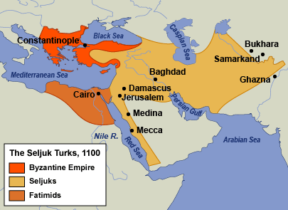
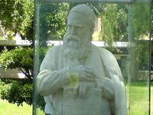
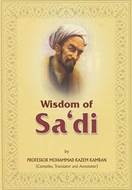
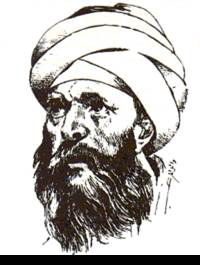
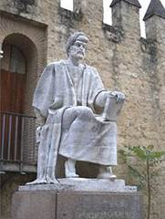
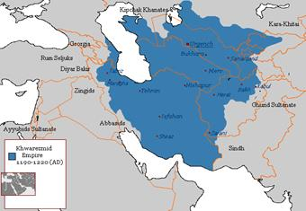

I. HỒI GIÁO PHƯƠNG ĐÔNG: 1058-1250
II. HỒI GIÁO PHƯƠNG TÂY: 1086-1300
III. XÉT QUA VỀ NGHỆ THUẬT HỒI GIÁO: 1058-1250
IV. THỜI ĐẠI OMAR KHAYYAM: 1038-1122
VI. KHOA HỌC HỒI GIÁO: 1057-1258
VII. AL-GHAZALI VÀ SỰ PHỤC HƯNG TÔN GIÁO
IX. NGƯỜI MÔNG CỔ TỚI: 1219-1258
Tughril Beg mất rồi (1063), người cháu (gọi ông bằng chú hay bác) tên là Alp Arslan, hai mươi sáu tuổi lên ngôi vua Seljouk[242]. Một sử gia có hảo ý tả Alp Arslan như sau:
“Cao lớn, râu mép dài tới nỗi muốn bắn cung thì ông có thói quen cột đầu râu lại, và không khi nào ông bắn trật. Ông đội một cái khăn cao tới nỗi người ta thường bảo rằng từ đỉnh khăn tới đầu râu mép của ông có khoảng cách là hai thước. Ông là một ông vua cương quyết và công minh, thường đại độ, quan lại có kẻ nào nhũng lạm hay tàn bạo là ông trừng trị liền, và cực kì nhân từ với kẻ nghèo. Ông cũng chịu khó nghiên cứu sử, chăm chú vui vẻ nghe sử biên niên của các tiên vương, và các cuốn cho biết về tính tình, chế độ cùng cách cai trị của các tiên vương”.
Mặc dầu có khuynh hướng bác học, Alp Arslan sống đúng như tên ông – “vị anh hùng có trái tim sư tử” – và xâm chiếm các xứ Hérat, Arménie, Géorgie, Syrie. Hoàng đế Hy Lạp Romain IV tập hợp một đạo quân một trăm ngàn người ô hợp, vô kỉ luật để giao chiến với mười lăm ngàn quân có kinh nghiệm của Arslan. Arslan đề nghị kí một hoà ước hợp tình hợp lí; Romain khinh bỉ bác bỏ, giao chiến ở Manzikert, xứ Arménie, anh dũng chiến đấu với đạo quân nhút nhát, thất bại, bị bắt sống, dẫn tới trước mặt Arslan. Arslan hỏi: “Nếu ông thắng tôi thì ông sẽ làm gì?”. Romain đáp: “Thì ta sẽ quất vào lưng ngươi mấy roi”. Arslan đối đãi với Romain rất nhã nhặn, bắt ông ta hứa chuộc mạng một số tiền lớn rồi thả ông ta về sau khi tặng nhiều món quí giá. Một năm sau, Arslan bị một kẻ thích khách đâm chết.

Đế quốc Seljouk năm 1100
(http://jspivey.wikispaces.com/file/view/1.gif/42931849/1.gif)
Con ông là Malik Shah (1072-1092) là ông vua lớn nhất triều đình Seljouk. Trong khi viên tướng của ông tên là Suleiman chiếm nốt xứ Tây Á thì ông đích thân đem quân chiếm xứ Transoxiane cho tới Boukhara và Kasligar. Nhờ viên tể tướng đa tài và tận tâm Nizam al-Mulk, triều đại của ông và của Arslan rực rỡ và thịnh vượng như triều đại Haroun al-Rashid ở Bagdad. Trong ba chục năm, Nizam tổ chức, kiểm soát hành chính, chính trị, kinh tế, khuyến khích thương mại, kĩ nghệ, sửa chữa đường sá, cầu cống, khách sạn, lữ hành đi đâu cũng được yên ổn. Ông lại quí trọng, rộng rãi với các nghệ sĩ, thi sĩ, nhà bác học, cất những kiến trúc rất đẹp ở Bagdad, đặc biệt là một học viện nổi tiếng; bỏ tiền ra và đích thân chỉ huy việc xây cất lại Điện nóc tròn trong thánh thất Ngày thứ sáu tại Isfahan. Nhờ ông đưa ý kiến mà Malik Shah mới mời Omar Khayyam và một số nhà thiên văn học khác sửa đổi lại lịch Ba Tư. Một truyện cổ kể rằng Nizam, Omar và Hasan ibn al-Sabbah hồi còn là bạn học đã thề sau này ai được hạnh phúc gì thì cũng san sẻ cho hai người kia; như biết bao giai thoại khác, truyện đó chắc là chuyện bịa, vì Nizam sinh năm 1017, còn Omar và Hasan mất năm 1123, 1124, và không có gì cho ta tin được rằng một trong hai nhà này thọ trăm tuổi.
Năm bảy mươi tuổi, Nazim trình bày triết lí chính trị của ông trong một tác phẩm bất hủ bằng văn xuôi Ba Tư, cuốn Siyasatnama (Nghệ thuật trị quốc). Ông cật lực khuyên khuyên từ nhà vua tới dân phải giữ chính giáo, nếu không có cơ sở tôn giáo thì nước sẽ loạn, và uy quyền của vua dựng trên tôn giáo. Đồng thời ông không quên đức vua chí tôn phải giự bổn phận của mình: đừng quá chén, đừng nhẹ dạ; phải tìm ra và trừng trị những quan lại tham nhũng, tàn bạo, chuyên hoành; phải hai lần một tuần cho công chúng được bệ kiến để kẻ ti tiện tới đâu cũng được dâng thỉnh nguyện, trình bày những nỗi oan ức. Nizam nhân từ nhưng kì thị tôn giáo; phàn nàn rằng triều đình thu dụng cả những tín đồ Kitô giáo, Do Thái giáo, giáo phái Shiite; ông rất kịch liệt tố cáo phái Ismailite làm nguy hại tới sự thống nhất của quốc gia. Năm 1092, một tín đồ Ismailite giả là kẻ có điều khẩn cầu, lại gần ông, và đâm chết ông.
Kẻ sát nhân ấy là hội viên một hội kín lạ lùng nhất trong lịch sử. Vào khoảng 1090, một lãnh tụ Ismalite – chính Hasan ibn al-Sabbah, bạn đồng song của Omar và Nizam trong giai thoại kể trên – chiếm đồn Alamout (ổ đại bàng) trong miền núi phía Bắc Ba Tư, và từ vị trí cao ba ngàn thước ấy, khủng bố, ám sát những kẻ chống lại giáo phái Ismailite. Trong cuốn Siyasatnama, Nizam buộc tội ông và đồng bọn là dư đảng của nhóm cộng sản Mazdakite Ba Tư, dưới triều Sassanide. Hội kín ấy có lễ nhập đảng, và đảng viên gồm nhiều cấp bực, trên cùng là một tôn sư mà Thập tự quân gọi là “Lão sơn nhân”. Cấp thấp gồm những fidais mà bổn phận là thi hành triệt để, không chút do dự, thắc mắc, lệnh của cấp trên. Marco Polo[243] đi ngang qua Alamout năm 1271, kể lại rằng viên tôn sư đã lập sau đồn luỹ một khu vườn “có những nàng đẹp như tiên, đùa giỡn, ái ân với đàn ông”, y như cảnh thiên đường của Hồi giáo. Kẻ nào muốn thụ lễ vô hội kín, thì được uống nước cần sa (hachish), khi mê man rồi, được người ta khiêng vô vườn; lúc tỉnh dậy, người ta bảo họ là ở thiên đường đấy. Sau bốn năm ngày hưởng cái thú uống rượu, ăn ngon, ôm ấp gái đẹp, người ta lại cho họ uống nước cần sa rồi khiêng họ ra khỏi vườn. Khi họ tỉnh dậy, họ hỏi cảnh thiên đường đâu mất rồi; người ta đáp nếu họ tuân lệnh tôn sư, trung tín, hi sinh tính mạng để phụng sự tôn sư thì được trở về thiên đường và ở đó vĩnh viễn. Người Hồi giáo gọi bọn thanh niên chịu thụ lễ là hashshasheen (kẻ uống nước cần sa), và tiếng này là gốc tiếng assassin (kẻ ám sát) của Pháp. Hasan cai trị Alamout ba mươi lăm năm, làm cho miền đó thành một trung tâm ám sát, giáo dục và nghệ thuật. Ông mất rồi mà tổ chức ấy còn duy trì được lâu, bành trướng thêm, chiếm được nhiều đồi khác, dẹp bọn Thập tự chinh và – tương truyền – ông theo lệnh của Richard Coeur de Lion mà giết Conrat de Montferrat. Năm 1256, quân Mông Cổ do Halagu chỉ huy chiếm Alamout, từ đó hội viên của Hội kín ám sát đó bị săn bắt, thủ tiêu vì theo chủ nghĩa hư vô, làm hại xã hội. Tuy nhiên, hội kín vẫn còn, thành một giáo phái, lần lần ôn hoà và lương thiện; các hội trưởng ở Ấn Độ, Ba Tư, Syrie và châu Phi phục tùng Aga Khan (vua Mông Cổ) và mỗi năm nộp thuế cống bằng một phần mười lợi tức của họ.
Vua Malik Shah chết sau viên tể tướng của ông sau một tháng; mấy người con gây chiến với nhau để tranh ngôi báu, trong nước hỗn loạn. Hồi giáo không đoàn kết mà chống với Thập tự quân được. Dưới triều vua Sinjar ở Bagdad (1117-1157), triều đại Seljouk lại rực rỡ một thời, văn thơ phát triển nhờ nhà vua bảo trợ; nhưng khi Sinjar chết rồi, vương quốc bị chia cắt thành nhiều tiểu quốc độc lập tranh giành đất đai với nhau. Ở Mossoul, một người nô lệ gốc Kurde[244] của Malik Shah, tên Zangi, thành lập triều đại Atabeg (vua cha) năm 1127, hăng hái chống lại Thập tự quân và chiếm được vùng Mésopotamie. Con của Zangi, tên là Nur ud din Mahmud (1146-1173) chiếm sứ Syrie, dời đô lại Damas, siêng năng và công minh trị dân, lật đổ triều đại Fatimide lúc đó đương hấp hối, mà chiếm Ai Cập.
Hai thế kỉ sau, cũng tương tự như dòng Abbaside do suy đồi mà bị dòng Buwayhide và dòng Seljouk khuất phục, các vua Hồi giáo ở Le Caire suy nhược[245], bị các tể tướng quân nhân cướp hết quyền, chỉ giữ địa vị giáo chủ. Các vua triều đại Fatimide chìm đắm trong tửu sắc với các cung tần, chung quanh toàn là bọn hoạn quan và nô lệ, mất hết chí khí, giao hết quyền cho tể tướng, cho họ mang tước vương, tự ý bổ dụng các quan lại và phân phát các lợi tức bất chính của triều đình. Năm 1164, hai đại thần tranh nhau chức tể tướng. Một người tên là Shawar cầu viện với Nur ud din, ông này phái Shirkuh cầm đầu một đạo quân nhỏ qua cứu. Shirkuh giết Shawar, tự phong làm tể tướng. Khi ông ta mất (1169), ghế tể tướng lại về một người cháu (gọi ông bằng chú hay bác), tên al-Malik al- Nasir Salahed-din Yusuf ibn Ayyub (có nghĩa là quốc vương, người bảo vệ và làm vẻ vang cho tôn giáo, tên Joseph, con của Job) mà phương Tây gọi là Saladin.
Ông ta sinh năm 1138 ở Tekrit, trên thượng lưu sông Tigre, gốc Kurde. Cha Ayyub làm tổng đốc mới đầu ở Baalbeck dưới triều Zangi, rồi ở dưới triều Nur ud din. Được sống trong gia đình đó, Saladin học được các nghệ thuật chính trị và chiến tranh. Nhưng ông lại ngoan đạo, theo chính giáo, siêng năng nghiên cứu thần học và sống một đời giản dị gần như khổ hạnh; người Hồi giáo coi ông là một trong những vị đại thánh của họ. Ông chỉ khoát một chiếc khăn quấn người bằng len thô, suốt đời chỉ uống nước lạnh, hồi nhỏ cũng hơi phóng túng về tình dục, nhưng sau rất ít gần đàn bà, khiến người đương thời lấy ông làm gương. Được phái tới Ai Cập với Shirkuh, ông tỏ ra có tài cầm quân, do đó mà được làm tư lệnh ở Alexandrie, và ông bảo vệ được thành này, thắng được quân France (1167). Được phong làm tổng lí đại thần hồi ba mươi tuổi, ông gắng sức phục hưng Hồi giáo chính thống ở Ai Cập. Năm 1171, ông bắt dân trong các buổi cầu nguyện công cộng thay tên vua dòng Fatimide theo giáo phái Shiite bằng tên vua Abbasside mà ông này chỉ còn giữ chức giáo hoàng chính thống ở Bagdad[246].
Al-Adid, ông vua cuối cùng dòng Fatimide, lúc đó đang ngoạ bệnh trong cung, không để ý tới cuộc cách mạng trong giáo hội ấy; Saladin hoàn toàn bưng bít, không cho ông ta hay, để con người vô dụng đó “có thể yên ổn nhắm mắt”. Quả nhiên, nhà vua yên ổn từ trần; vì không chỉ định người nối ngôi, nên triều đình Fatimide chấm dứt lặng lẽ. Saladin tự phong là tổng đốc, bỏ chức tổng lí đại thần (vì triều đình Ai Cập không còn vua), và tự đặt dưới quyền của Nur ud din. Khi vào hoàng cung ở Le Caire, ông ta thấy trong cung có mười hai ngàn người, toàn là phụ nữ, chỉ trừ những người đàn ông trong hoàng tộc; còn đồ châu bảo, ngà, sứ, thuỷ tinh, mĩ thuật phẩm đủ loại nhiều vô số kể, không cung điện đương thời nào bằng. Ông không lấy một món nào cả, giao cung điện cho các tướng lãnh, còn ông thì tiếp tục sống một cuộc đời giản dị sung sướng trong dinh tổng lí đại thần.
Nur ud din mất (1173), các tổng đốc trong vương quốc không chịu thừa nhận người con trai mười một tuổi của ông làm tự quân, và xứ Syrie suýt lâm vào cảnh loạn. Viện lẽ rằng Thập tự quân nhân cơ hội ấy sẽ chiến Syrie, Saladin cầm đầu một đoàn quân bảy trăm người, rời Ai Cập, tiến quân rất mau và làm chủ được Syrie để ngăn Thập tự quân. Trở về Ai Cập, ông xưng vương và khai sáng triều đại Ayyoubite (1175).
Sáu năm sau ông dời đô lại Bagdad và chiếm xứ Mésopotamie. Ở đó cũng như ở Le Caire, ông tiếp tục theo chính giáo. Ông xây dựng nhiều thánh thất, dưỡng đường, tu viện và trường dạy thần học, và cũng như Platon, khinh các thi sĩ. Hễ nghe nói có điều gì bất công thì ông sửa lại liền, ông giảm thuế mà vẫn khuếch trương các công tác, ông trị dân siêng năng và đắc lực. Sự công minh, liêm chính của ông làm cho đế quốc Hồi giáo phương Đông được vinh quang, và người Kitô giáo phải nhận rằng ông là một bậc quân tử mặc dầu “ngoại đạo”.
Chúng tôi chỉ kể qua sự phân chia thành nhiều tiểu quốc sau khi Saladin chết (1193). Các con ông kém tài và triều đại Ayyoubite chấm dứt sau ba thế hệ (1260). Ở Ai Cập, nó thịnh vượng tới năm 1250, đạt tới tột bực dưới thời minh quân Malik al-Kamil (1218-1238). Ở Tiểu Á, dòng Seljouk thành lập triều đại “Rum”[247] (tức La Mã) và trong một thời gian Konia thành một trung tâm văn hóa. Tiểu Á, từ thời Homère, đã chịu nhiều ảnh hưởng của Hy Lạp, bây giờ ảnh hưởng đó bị gột hết, và thành ra Thổ hoá, y hệt Turkestan (…).
Tuy nhiên, ngay cả trong thời suy vi ấy, Hồi giáo vẫn đứng đầu thế giới về thơ, khoa học, triết học, mà về chính trị học ngang hàng với Hohenstaufen[248]. Các vua Seljouk – Tughril Beg, Alp Arslan, Malik Shah, Sinjar – vào hàng những quốc vương tài giỏi nhất thời Trung cổ; Nizam al-Mulk vào hàng chính trị gia danh tiếng nhất; Nur u din, Saladin, và al-Kamil không kém vua Richard I, Louis IX và Fédéric II ở châu Âu. Tất cả ông vua Hồi giáo ấy, ngay những ông vua nhỏ hơn nữa, cũng tiếp tục sự nghiệp khuyết khích văn nghệ của triều đại Abbasside; tại triều đình của họ có những thi hào như Omar, Nizami, Sa’di và Jalal ud din Rumi; và tuy triết lí bị bóp nghẹt vì chủ trương thận trọng theo chính giáo của họ, nhưng kiến trúc lại phát triển rực rỡ hơn các thời trước. Các vua Seljouk và Saladin ngược đãi những người Hồi giáo theo tà thuyết, nhưng rất khoan dung với người Kitô giáo và Do Thái giáo, tới nỗi các sử gia Byzance chép rằng nhiều cộng đồng Kitô giáo yêu cầu các thủ lĩnh Seljouk lại triệt giùm cho họ cái nạn áp bức của các quan lại Byzance. Dưới sự cai trị của triều đại Seljouk và Ayyoubite, Tây Á lại thịnh lên cả về vật chất lẫn tinh thần. Damas, Alep, Mossoul, Bagdad, Isfahan, Rayy, Hérat, Amida, Nishapur và Merv vào những hàng thị trấn đẹp nhất và văn hóa cao nhất thời đó. Vậy, tuy suy vi mà vẫn rực rỡ.
Năm 1249, vua Ai Cập cuối cùng của dòng Ayyoubite, tên là al-Salih, tắt thở. Bà vợ goá (trước vốn là nữ tì) của ông, tên là Shajar al-Durr, làm ngơ cho người ta ám sát con riêng của chồng, rồi lên ngai vàng. Để cứu vãn cái danh dự “tu mi” của mình, các thủ lĩnh Hồi giáo ở Le Caire lựa một người đàn ông, trước cũng làm nô lệ, tên là Aybak, để cùng trị nước với nữ hoàng. Shajar-al-Durr cưới Aybak nhưng vẫn nắm hết quyền hành; và khi Aybak định tuyên bố độc lập thì nữ hoàng sai nhận nước cho chết lúc ông đương tắm (1257). Chính bà chẳng bao lâu bị những nô tì của Aybak dùng guốc đập tới chết để trả thù cho chủ.
Tuy nhiên Aybak sống được đủ lâu để sáng lập triều đại Mameluk. Mameluk có nghĩa là “bị ức chế”; tiếng đó trỏ những người da trắng, đa số là người Thổ Nhĩ Kỳ hay Mông Cổ mạnh mẽ, gan dạ, làm vệ binh trong cung điện các vua Ayyoubite. Ở Le Caire cũng như ở La Mã, ở Bagdad, bọn vệ sĩ tiếm quyền mà làm vua. Suốt hai trăm sáu mươi bảy năm (1250-1517), triều đại Mameluk cai trị Ai Cập, có khi cả Syrie nữa (1371-1516), kinh đô của họ bị nhuộm máu vì các cuộc ám sát, nhưng cũng được tô điểm bằng nghệ thuật; họ anh dũng đánh bại quân Mông Cổ ở Ain-Jalut (1260) mà cứu được Syrie, Ai Cập và cả châu Âu nữa. Họ ít được hoan nghênh hơn khi họ cứu xứ Palestine khỏi bị quân France xâm chiếm, và khi họ đuổi được chiến sĩ Kitô giáo cuối cùng ra khỏi châu Á.
Ông vua Mameluk hùng cường và ít lương thiện nhất là al-Malik Baibars (1260-1277). Mới sanh ra đã là nô lệ Thổ, chỉ nhờ can đảm và tài giỏi mà lần lần lên được những cấp chỉ huy cao nhất trong đạo quân Ai Cập. Chính ông ta đã thắng vua Pháp Louis IX ở Mansura năm 1250; và mười năm sau ông chiến đấu thật tài giỏi mà cũng thật hung dữ ở Ain-Jalut, dưới sự chỉ huy của vua Kutuz. Trên đường về Le Caire, ông ám sát Kutuz, tự xưng vương và niềm nở tiếp nhận sự hoan nghênh của dân chúng dành cho người thắng trận bị ông giết. Ông còn chiến đấu mấy lần nữa với Thập tự quân, lần nào cũng thắng; nhờ những trận thánh chiến ấy mà người Hồi giáo tôn trọng ông gần bằng Haroun và Saladin. Một nhà chép sử biên niên đương thời theo Kitô giáo bảo “thời bình, ông sống đạm bạc, trong sạch, công bằng với dân chúng, nhân từ với thần dân Kitô giáo nữa”. Ông tổ chức chính quyền Ai Cập khéo tới nỗi, mặc dù những người kế vị ông bất tài mà vẫn giữ được ngai vàng cho tới khi người Thổ Ottman diệt năm 1517. Ông lập một đạo quân và một hạm đội mạnh cho Ai Cập, khai thông các cảng, kinh, đường sá, và xây dựng một thánh thất mang tên ông.
Một người nô lệ Thổ khác phế con trai của Baibars mà lên ngôi, tức vua al-Mansur Sayf-al-Din Kalaun (1279-1290). Sử ghi công lớn nhất của ông ta là dựng một dưỡng đường lớn ở Le Caire, mà mỗi năm ông trợ cấp cho một triệu dirhem (500.000 Mĩ kim). Con trai ông, Nasir (1290-1340) được đưa lên ngôi ba lần, nhưng chỉ bị phế hai lần, xây dựng nhiều thuỷ lộ, nhà tắm công cộng, trường học, tu viện và ba chục thánh thất; bắt một trăm ngàn người làm xâu để đào một con kênh nối Alexandrie với sông Nil; giữ tục Mameluk, giết hai vạn con vật để làm tiệc cưới con trai. Khi ông băng qua sa mạc, thì có bốn chục con lạc đà chở trên lưng cả một vườn đất tốt để mỗi ngày có rau tươi cho ông ăn. Ông tiêu phí quá, quốc khố gần cạn, các người nối ngôi ông không sao cứu vãn được, mà từ đó triều đại Mameluk từ đó suy tàn.
Triều đại ấy không làm cho ta có thiện cảm các triều đại Seljouk, Ayyoubite. Họ lưu lại được nhiều đại công tác nhưng hầu hết là do sự bóc lột đến tận xương tuỷ sức lao động của nông dân và vô sản để làm lợi cho chính quyền vô trách nhiệm đối với quốc gia, hoặc làm lợi cho giới quí tộc; họ chỉ dụng mỗi một phương pháp là ám sát để bãi chức một bề tôi. Nhưng những ông vua ấy biết thưởng thức và có tinh thần rộng rãi về văn nghệ. Thời đại cũng họ là thời rực rỡ nhất của ngành kiến trúc Ai Cập Trung cổ.
Hồi đó (1250-1300) kinh đô Le Caire là thị trấn giàu có nhất ở phía Tây sông Indus (nghĩa là từ biên giới Ấn Độ tới bờ Địa Trung Hải). Chợ búa bán đầy các nhu yếu phẩm và vô số xa xỉ phẩm; có những tiệm nhỏ xây trong tường chất đầy hàng hoá; có những ngỏ lúc nhúc người và súc vật, ồn ào tiếng người bán rong và tiếng xe bò, xây thật hẹp để có bóng mát, và khúc khuỷu để dễ bảo vệ; nhà nào cũng có cái mặt ngoài buồn, nghiêm, từ ngoài đường chói lọi ánh sáng, nóng nực, ồn ào, bước ngay vô trong những phòng tối tăm, mát mẻ, những phòng này ngó ngay ra cái sân trong hoặc một mảnh vườn chung quanh là tường kín; trong phòng bày biện rất đẹp mắt: màn, thảm, bức thêu, nghệ phẩm; đàn ông nhai cần sa bỏm bẻm để có những ảo cảm say mê; đàn bà líu lo nói chuyện phiếm trong zenana (phòng the), hoặc lén lút đưa tình ở một cửa sổ; ở thành phố, có những cuộc hoà nhạc kì dị, những bản nhạc tấu lên với ngàn cây luth; có những công viên đầy hoa thơm bóng mát; những con kinh và sông Nil điểm thuyền buôn, tàu chở khách và du thuyền; đó là cảnh kinh đô Le Caire thuộc Hồi giáo thời Trung cổ. Một thi sĩ Le Caire đã vịnh:
Sông Nil lững lờ trôi bên cạnh khu vườn ấy,
Tôi thường chèo chiếc dahabiya trên dòng nước,
Tôi thường ghé bờ để nghỉ một lát,
Để nụ cười rạng rỡ, vui tươi của nàng sưởi ấm tấm lòng tôi,
Nàng đã làm cho cảnh nơi đây đẹp đẽ vô cùng.
Trong thời gian đó, một loạt triều đại kế tiếp nhau ở Bắc Phi. Nhà Zayride (972-1148) và nhà Hafside (1228-1534) cầm quyền ở Tunisie; nhà Hammadide (1007-1152)[249] làm vua ở Algérie; nhà Almoravide (1056-1147) và nhà Almohade (1130-1269) làm vua ở Maroc. Ở Y Pha Nho, các vua Almoravide mới đầu là những chiến sĩ thắng trận, còn giữ được lối sống đạm bạc ở châu Phi, chẳng bao lâu lây thói xa hoa của các vua ở Séville, Cordoue, không còn chịu kỉ luật khắc khổ thời chiến nữa mà hưởng những lạc thú thời bình; ai cũng ham làm giàu, cho rằng có nhiều tiền mới là tài giỏi, đức can đảm bị coi thường, phụ nữ thì nhờ sắc đẹp mà được tôn trọng ngang các giáo chủ, mà các giáo chủ chỉ hứa cho tín đồ sau này được hưởng ở thiên đường những thú vui say đắm, còn phụ nữ thì tặng cho họ được những cái vui ấy ngay trên kiếp trần này. Quan lại hoá tham nhũng và tổ chức hành chính rất đắc lực dưới triều Yusuf ibn Tashfin (1106-1143), đã suy yếu dưới triều con trai của ông là Ali (1106-1143)[250]. Quan lại càng biếng nhác thì trộm cướp càng hoành hành; đường sá mất yên ổn, thương mại suy, quốc gia nghèo đi. Các vua Y Pha Nho theo Kitô giáo chụp lấy cơ hội ấy, cướp phá Cordoue, Séville và các thị trấn khác. Một lần nữa, Hồi giáo quay về châu Phi cầu cứu.
Ở châu Phi, năm 1121, một cuộc cách mạng tôn giáo xảy ra và một giáo phái mới xuất hiện dùng sức mạnh để cai trị. Abdallah ibn Tumart bài bác cả thuyết Thượng Đế cũng có hình thể, tâm tính như người của Hồi giáo chính thống, lẫn chủ trương duy lí của các triết gia, bắt tín đồ phải trở về lối sống bình dị, mộ đạo; sau cùng ông tự xưng là Mahdi tức đấng cứu thế mà giáo phái Shiite tin là sẽ xuống trần. Các bộ lạc man rợ ợ dãy núi Atlas ùn ùn theo ông, lật đổ các vua Almoravide ở Maroc, rồi ở Y Pha Nho họ cũng thắng dễ dàng. Nhờ các thống đốc Abd al-Mumin (1145-1163) và Abu Yakub Yusuf (1163-1184) dòng Almohade, cảnh trật tự và thịnh vượng trở lại ở Andalousie và Maroc; văn học và khoa học lại phục hưng; các triết gia được che chở miễn là họ mặc nhiên thừa nhận điều này: viết sao cho không ai hiểu gì cả. Nhưng Abu Yusuf Yaqub (1184-1199) phải chiều lòng các nhà thần học, bỏ rơi triết lí và ra lệnh đốt hết các tác phẩm triết học. Con ông là Muhammad al-Nasir (1199-1214) chẳng quan tâm chút gì tới triết học cùng tôn giáo, bỏ bê việc nước, chỉ chuyên môn hưởng lạc, nên bị liên quân Kitô giáo Y Pha Nho đánh thua tan tành ở Las Navas de Tolosa năm 1212. Y Pha Nho thuộc triều đại Almohade từ đó bị chia cắt thành những tiểu quốc độc lập bị Kitô giáo chiếm lần lần từng nước từng nước một: Cordoue bị chiếm năm 1236, Valence năm 1238, Séville năm 1248. Bị tấn công liên tiếp, người Maure rút lui về Grenade, nơi đó dễ cố thủ nhờ có dãy núi tuyết Sierra Nevada; những cánh đồng ở đó có đủ nước trồng trọt biến thành vườn nho, cam và ô-liu, và các thị trấn chung quanh Xérés, Jaén, Almeria và Malaga, mặc dầu bị quân Ki tô giao tấn công nhiều lần; thương mại và kĩ nghệ phát triển, nghệ thuật thịnh lên, dân chúng bận những quần áo màu sắc tươi thắm và tổ chức nhiều hội hè vui vẻ. Tiểu quốc đó sống sót được tới năm 1492, và là cứ điểm cuối cùng ở châu Âu của một nền văn hóa đã giúp cho Andalousie làm vẻ vang cho nhân loại trong mấy thế kỉ.
Chính trong thời ngoại thuộc người Berbère mà Y Pha Nho theo Hồi giáo xây dựng cung điện Alhambra ở Grenade, dinh Alcazar và tháp vuông Giralda ở Séville. Kiểu kiến trúc đó thường được gọi là kiểu Maure vì từ Maroc đem qua; nhưng nhiều bộ phận chịu ảnh hưởng của Syrie, Ba Tư và cũng hơi giống lăng Taj Mahal ở Ấn Độ sau này, vì nghệ thuật Hồi giáo quả là mênh mông và phong phú. Kiểu ấy có những nét kiều diễm chứ không hùng tráng như các thánh thất ở Damas, Cordoue, Le Caire. Vẻ đẹp tế nhị, thanh nhã, tài nghệ tập trung vào cả việc trang trí, và điêu khắc gia đã lấn các kiến trúc sư.
Các vua triều đại Almohade đều hăng hái xây cất. Mới đầu họ xây cất để phòng thủ, dựng chung quanh các thị trấn lớn những vòng thành với những tháp canh đồ sộ, vững chắc, như Tháp Vàng (Torro del Oro) ở Séville. Dinh Alcazar ở Séville vừa là dinh vừa là đồn, phía mặt coi giản dị mà thô. Kiến trúc sư ở Tolède tên là Zalubi vẽ dinh đó cho Abu Yakub Yusuf (1181); sau 1248, các vua Kitô giáo thích ở các dinh ấy; nó được Pierre I (1353), Charles V (1526)… và Isabelle (1833) sửa đổi, trùng tu hoặc xây cất thêm cho rộng (…).
Ngoài dinh Alcazar đó ra, Abu Yakub Yusuf còn dựng (1171) thánh thất lớn ở Séville, hiện nay không còn gì. Năm 1196, kiến trúc sư Zabir cất ngôi tháp rất đẹp mà chúng ta gọi là tháp Giralda. Người Kitô giáo sau khi xăm lăng, đổi thánh thất thành giáo đường (1235); năm 1401 người ta lại phá giáo đường, một phần dùng các vất liệu cũ để cất ngay ở chỗ đó đại giáo đường Séville. Còn tháp Giralda, người Kitô giáo giữ nguyên phần dưới (76 thước) và xây chồng lên hai mươi bảy thước nữa, kiến trúc hai phần hoàn toàn hợp nhau. Hai phần ba ở trên được trang hoàng rất đẹp bằng những lan can và chấn song coi y những tấm ren bằng đá và hồ giả cẩm thạch (stuc). Ở trên ngọn dựng một bức tượng vĩ đại bằng đồng đỏ, tượng Tín ngưỡng; tượng đó không tượng trưng đúng tinh thần tôn giáo bất tuyệt của Y Pha Nho, vì gió hơi thổi nó cũng đã quay, do đó nó mang tên Y Pha Nho là giralda (do chữ gira là quay). Người Maure dựng được ở Marrakech (1069) và Rabat (1197) những tháp cũng gần đẹp như vậy.
Ở Grenade, năm 1248, Muhammad ibn al-Ahmar (1232-73) sai dựng kiến trúc nổi danh nhất ở Y Pha Nho, cung Alhambra (có nghĩa là Cung đỏ). Ông đã lựa một chỗ trên núi hiểm trở chung quanh có những khe sâu, và nhìn xuống hai dòng sông Darro và Genil. Ông thấy có một cái đồn luỹ ở đó, đồn Akazaba, cất từ thế kỉ thứ IX; ông mở rộng nó ra, dựng một vòng tường lớn ở ngoài, cái dinh cổ nhất ở trong với hàng chữ khiêm tốn này: “Ngoài Allah ra, không ai là nhà chinh phục cả”. Dinh thự mênh mông đó được nhiều lần mở rộng ra, sửa chữa dưới thời Hồi giáo cũng như dưới thời Kitô giáo.
Theo những qui tắc kiến trúc đồn luỹ ở Hồi giáo phương Đông, kiến trúc sư khuyết danh nào đó mới đầu vẽ một vòng thành để có thể chứa được bốn vạn người. Hai thế kỉ sau, người ta thích sự xa hoa, lộng lẫy hơn, mới lần lần đổi thành quách ấy thành lâu đài, trang hoàng, chạm trổ hoặc sơn cực kì đẹp đẽ. Trong sân Cây sim (Myrte), một hồ nước phản chiếu cành lá và cái cổng. Sau sân ấy là Tháp Comares, mà khi bị bao vây, người trong thành trốn vào đó mà quân địch không sao hạ nổi. Trong tháp có điện tiếp các Sứ thần; các thống đốc Grenade ngồi trên ngai, còn các sứ thần thì trầm trồ tán thưởng sự đẹp đẽ và phong phú của vương quốc nhỏ xứ đó. Trong sân chính, sân Patio de los Leones, mười hai con sư tử bằng cẩm thạch canh giữ một phông ten vĩ đại bằng tuyết hoa thạch (…). Ở đây người Maure đã trang hoàng có lẽ quá mức, thành thử du khách nhìn lâu rồi hoá choá. Ta có cảm giác như mong manh, thiếu sự mạnh mẽ. Vậy mà công trình tô đắp, đánh bóng đó tồn tại được sau mười hai lần động đất; chỉ cái trần điện Sứ thần là đổ, còn bao nhiêu đều y nguyên. Tóm lại, toàn thể kiến trúc ấy, vườn tược, phông ten, lan can… đánh dấu sự cực thịnh mà đồng thời cũng là sự suy vi của nghệ thuật Maure ở Y Pha Nho: lộng lẫy quá mức mà thiếu hùng tráng (…).
Tất cả các nghệ thuật Hồi giáo đều đạt tới tột đỉnh trong thời đại lạ lùng vừa thịnh vừa suy ấy. Hình như đồ gốm là một cái thú không thể thiếu được trong đời người Ba Tư và rất ít khi nghệ thuật đồ gốm đạt được sự hoàn hảo của họ trong nhiều khu vực. Những kĩ thuật làm men long lanh như kim loại, vẽ một hay nhiều màu trên hoặc dưới lớp men, kĩ thuật làm ngói, đồ sành hoặc thuỷ tinh học được Ai Cập, Mésopotamie, Ba Tư, Syrie thời đó đạt tới mức tột đỉnh. Họ cũng chịu ảnh hưởng của Trung Hoa, đặt biệt về ngành hoạ chân dung, nhưng ảnh hưởng ấy không thắng được lối vẽ Ba Tư. Đồ sứ nhập cảng từ Trung Hoa; vì ở Cận và Trung Đông, rất khó kiếm thứ đất sét trắng làm đồ sứ nên người Hồi giáo không chế tạo được thứ đồ ấy. Tuy nhiên, trong ba thế kỉ XII, XIII, XIV, đồ gốm Ba Tư hơn hết thảy các nước khác vì nhiều kiểu, hình thể cân xứng, màu vẽ rực rỡ, đường nét thanh nhã.
Xét chung, các tiểu nghệ thuật (art mineurs) của Hồi giáo cũng rất đáng quí trọng. Alep và Damas sản xuất được những đồ thuỷ tinh mong manh mà rất đẹp, trang sức bằng men; còn Le Caire thì chế tạo được những đèn thuỷ tinh tráng men để treo trong các thánh thất, cung điện; hiện nay những người chơi đồ cổ rất quí những thứ ấy[251]. Kho báo của dòng Fatimide bị Saladin phân tán chứa hàng ngàn lọ bằng thuỷ tinh hoặc mã não có vân mà nghệ thuật có vẻ như vượt quá khả năng của chúng ta ngày nay[252]. Nghệ thuật đồ kim thuộc của Assyrie thời cổ ấy, bấy giờ cũng vượt hẳn thời trước, đặc biệt ở Syrie, Ai Cập, và tới thế kỉ XV thì truyền qua Venise. Người ta đúc hoặc đập đồng, đồng đỏ, đồng thau, vàng, bạc, làm thành các đồ dùng, khí giới, áo giáp, bình bông, chân đèn, hộp bút, bình mực, lư hương, lò than, hình các loài vật, hộp đựng kinh Coran, chìa khoá, kéo… chạm trổ rất đẹp, có khi nạm ngọc thạch nữa. Có những mặt bàn bằng đồng thau chạm vô số hình, và những chấn song thật khéo dựng ở điện thờ, cửa hoặc quanh mộ (…).
Ngành điêu khắc bị coi là nghệ thuật phụ; người Hồi giáo chỉ đục nổi thành những hình trang trí; một ông vua hơi phóng túng có thể sai tạc một pho tượng cho mình, cho vợ hoặc một vũ nữ, nhưng như vậy là có tội, rất ít khi dám bày cho công chúng thấy. Nhưng nghệ thuật chạm đồ gỗ thì lại phất triển. Cánh cửa, khán thờ, giảng đàn, giá đặt kinh, bình phong, trần nhà, bàn, cửa sổ, tủ, hộp, lược chạm như đăng ten, tiện thật mòn, nhẵn. Kiên nhẫn vô cùng là bọn thợ dệt, thêu các đồ lụa, sa tanh, gấm, nhung thêu kim tuyết, màn, lều, thảm, đường thêu thật tinh vi, hình thật đẹp, khắp thế giới phải tấm tắc khen. Marco Polo đi thăm xứ Tiểu Á vào khoảng 1270, thấy ở đó những “tấm thảm đẹp nhất thế giới”. John Singer Sargent cho rằng có một tấm thảm Ba Tư “quí bằng tất cả những bức hoạ của những thời đại trước”. (…).
Người Hồi giáo trọng môn tiểu hoạ mà lại khinh môn bích hoạ và vẽ chân dung. Vua Amir (1101-1130), triều đại Fatimide sai hoạ sĩ vẽ trong của phòng của ông ở Le Caire chân dung nhiều thi sĩ đương thời; như vậy là cái tục cấm khắc hình người thời ấy đã bớt khắc khe rồi. Miền Transoxiane vì ở xa, ít chịu ảnh hưởng những thành kiến ấy, nên môn hoạ thịnh nhất; có những sách chép tay Thổ Nhĩ Kỳ vẽ rất nhiều hình nhân vật trong truyện. Không có một bức tiểu hoạ nào đáng tin là ở thời đó mà còn lưu lại tới ngày nay, nhưng cứ xét sự thịnh vượng của ngành ấy trong thời Hồi giáo phương Đông bị lệ thuộc Mông Cổ, chúng ta cũng đoán được là ở triều đại Seljouk, tiểu hoạ cũng đã phát triển mạnh rồi. Các nghệ sĩ ganh nhau tô điểm các kinh Coran cho mỗi ngày một đẹp hơn cho các thánh thất, các tu viện, các chức sắc và các trường học dưới triều đại Seljouk, Ayyoubide hoặc Mameluk[253], bìa bằng da hoặc gỗ sơn được chạm trổ, nét nhỏ như mạng nhện. Nhiều phú gia tiêu cả một gia sản nhỏ để thuê các nghệ sĩ làm những sách đẹp hơn tất cả các thời trước. Một đoàn thể gồm các người làm giấy, các thư gia[254], hoạ sĩ và thợ đóng sách có khi bỏ ra mười bảy năm để làm thành mỗi một cuốn sách. Giấy phải là thứ tốt nhất, ngọn bút phải làm bằng thứ lông trắng ở một con mèo con chưa đầy hai tuổi; mực lam phải chế bằng thứ đá lapis-lazulis[255] tán nhỏ ra, đắt như vàng; có những đường gạch hay chữ phải vẽ bằng vàng nước. Một thi sĩ Ba Tư bảo: “Không sao tưởng tượng nổi các vui của lí trí khi nhìn một đường vẽ” (hay một hàng chữ tuyệt đẹp).
Cơ hồ như thời đại đó, số thi sĩ và số thi sĩ và nhà bác học cũng đông như số nghệ sĩ trong các ngành kể trên. Dân chúng Le Caire, Alexandre, Jérusalem, Baalbeck. Alep, Damas, Mosoul, Emrsa, Thou, Nishapur và nhiều thị trấn khác đều tự hào về các học viện của mình; riêng ở Bagdad năm 1064 có tới ba chục học viện. Năm sau, Nizam al-Malk cất thêm một học viện nữa, học viện Nizamiya; rồi năm 1234, vua Mustansir lại xây thêm một học viện nữa, lớn hơn, kiến trúc đẹp hơn và đồ đạc nhiều hơn tất cả các học viện khác; một du khách khen nó là kiến trúc đẹp nhất trong thị trấn. Nó có bốn trường luật cách nhau; những sinh viên giỏi nhất khỏi phải đóng học phí mà còn được nuôi và săn sóc khi bệnh tật, và lãnh mỗi tháng một dinar bằng vàng để tiêu vặt; học viện có một dưỡng đường, một nhà tắm và một thư viện, sinh viên và giáo sư được tự do vô đọc sách. Chắc là đôi khi có nữ sinh viên vì sử chép có một vị shaikha – nữ giáo sư – mà bài giảng, cũng như Aspasie hay Hypatie[256], thu hút được một số đông thính giả (khoảng trước hay sau 1177). Thư viện thời đó vừa nhiều vừa nhiều sách hơn thời nào hết ở đế quốc Hồi giáo; riêng Y Pha Nho thuộc Maure cũng đã có bảy chục thư viện công cộng. Ngữ pháp gia, từ ngữ học gia, sử gia và các nhà soạn bách khoa toàn thư vẫn nhiều như các thời trước. Hồi giáo ham mê soạn những bộ tiểu sử chung cho nhiều nhà, đó là sở trường của họ: Ibn al-Kifti (mất năm 1248) chép tiểu sử của bốn trăm mười bốn triết gia và học giả; Ibn Abi Usaybia (1203-70) viết về đời bốn trăm y sĩ; Muhammad Awfi (1228) viết một cuốn toàn thư về ba trăm thi sĩ Ba Tư mà không nói gì về Omar Khayyam; và Muhammad ibn Khallikan (1211-82) hơn hết thảy các nhà khác, một mình soạn một bộ chép tiểu sử ngắn của tám trăm sau mươi lăm người Hồi giáo có tiếng tăm đã chết. Trong một khu vực mênh mông như vậy mà tài liệu của ông rất chính xác, mặc dầu vậy ông vẫn xin lỗi về những sơ sót của ông trong câu này ở cuối bộ: “Trừ kinh Coran ra, Allah không cho phép phàm nhân viết một cuốn nào mà không có lỗi”. Muhammad al-Shahrastani trong cuốn “Sách về các tôn giáo và các giáo phái” (1128), phân tích và tóm tắc lịch sử những tín ngưỡng chính và triết lí trên thế giới; không một học giả Kitô giáo nào đương thời một cuốn uyên bác và vô tư như vậy.
Tiểu thuyết Hồi giáo không bao giờ vượt lên khỏi trình độ sơ đẳng; toàn là những chuyện tả phong tục bọn bợm, điếm, chi tiết rườm ra, truyện sau nối truyện trước chỉ nhờ một tính cách chung, chứ chẳng mạch lạc gì cả. Sau kinh Coran, bộ Ngàn lẻ một đêm, bộ Ngụ ngôn của Bidpai, tác phẩm phổ biến nhất của Hồi giáo là cuốn Makamat của Abu Muhammad al-Hariri (1054-1122) ở Bassora. Tác phẩm viết bằng một thể văn xuôi Ả Rập có vần kể truyện một kẻ vô loại tên là Abu Zaid, hoang tàn, bậy bạ, tội lỗi, báng bổ cả thần thánh, nhưng có một điều dễ thương là khôn khéo, nhiều thủ đoạn và có một nhân sinh quan dễ khiến độc giả xiêu lòng.
“Xin bạn đừng nghe lời kẻ điên nào ngăn bạn hái bông hồng khi nó mãn khai và ở tầm tay bạn; kiếm cách đạt được mục đích của bạn đi, dù bạn thấy nó có vẻ xa vời quá; mặc thiên hạ muốn nói gì thì nói; xin bạn cứ hưởng lạc, nó quí nhất đời đấy!”.
Thời đại đó hầu hết các người Hồi giáo có học đều làm thơ. Theo Ibn Khaldoun, tại các triều đình nhà Almoravide và nhà Almohade ở châu Phi và Y Pha Nho có hàng trăm thi sĩ. Trong các cuộc thi thơ ở Séville, El-Aama et-Toteli (có nghĩa là thi sĩ đui ở Tudela) được giải nhất nhờ hai câu dưới đây tóm tắt được một nửa các bài thơ của nhân loại:
Khi nàng cười thì trân châu xuất hiện; khi nàng hạ tấm voan thì trăng rằm lồ lộ,
Vũ trụ hẹp quá không chứa được nàng; vậy mà nàng bị nhốt trong trái tim tôi.
Tương truyền các thi sĩ khác nghe hai câu đó, xé bài thơ của mình đi, không đọc lên nữa. Tại Le Caire, thi sĩ Zuheyr, tóc bạc đã lâu rồi mà vẫn làm thơ ca tụng ái tình. Tại phương Đông, sự tan rã của đế quốc thành nhiều tiểu quốc làm cho số tiểu vương tăng lên và họ giành nhau bảo trợ thi văn, nhờ vậy mà văn học rất thịnh, y như nước Đức ở thế kỉ XIX. Ba Tư là quốc gia có nhiều thi sĩ nhất. Anwari ở miền Khorasan (mất năm 1185) có một thời làm thơ ở triều đình Sinjar, nhưng ông ca tụng ông trước rồi mới tới nhà vua:
Tâm hồn tôi nóng như lửa, lưỡi tôi lưu loát như nước,
Trí tuệ tôi mẫn nhuệ mà thơ tôi toàn bích,
Hỡi ơi! Không có một vị vua nào đáng cho tôi khen!
Hỡi ơi! Không một người yêu nào đáng cho tôi làm thơ tặng!
Thi sĩ Khagani (1106-1185) đồng thời với Anwari cũng tự cao tự đại như vậy, và tính ngạo mạn của ông khiến người che chở ông ta mỉa mai cay độc huyết thống của ông[257] trong mấy câu thơ dưới đây:
Này bạn Khagani, bạn làm thơ tài tới mấy,
Thì tôi cũng khuyên bạn điều này:
Đừng làm thơ phúng thích một thi sĩ lớn tuổi hơn bạn nhé,
Người đó có thể là thân phụ của bạn mà bạn không biết đấy.
Châu Âu biết được thơ Ba Tư là do Omar Khayyam hơn cả; Ba Tư sắp ông vào hàng các nhà bác học và coi những bài tứ tuyệt của ông chỉ là món tiêu khiển bất thần của “một trong những toán học gia lớn nhất thời Trung cổ”. Abu’l-Fath Umar Khayyami ibn Ibrahim sanh ở Nishapur năm 1038[258]. Biệt hiệu của ông là “người làm lều”, nhưng và cả thân phụ của ông là Abraham, không ai làm lều cả; ở thời ông, những tên nghề chỉ người đã mất ý nghĩa rồi cũng như những tên Boulanger (người làm bánh mì), Lefèvre (thợ thủ công)… của Pháp hiện nay. Sử ít chép về đời ông nhưng lưu lại của ông nhiều tác phẩm. Cuốn Đại số học của ông dịch ra tiếng Pháp năm 1857, đánh dấu một bước tiến bộ đáng kể so với al-Khwarizmi cũng như với toán học Hy Lạp[259]; cách ông giải một số phương trình bậc ba (có lẽ là đỉnh cao nhất trong môn toán học thời Trung cổ). Một cuốn khác cũng về đại số học của ông (bản viết tay lưu trữ tại Thư viện Leyde) vừa nghiên cứu vừa phê phán các định đề và định nghĩa của Euclide. Năm 1074, vua Malik Shak sai ông cùng với các nhà bác học khác sửa lại lịch Ba Tư; kết quả là lịch của ông cứ ba ngàn bảy trăm bảy chục năm mới phải sửa lại một ngày, còn đúng hơn lịch của chúng ta ba ngàn ba trăm ba chục năm phải sửa lại một ngày; chúng tôi xin để cho nền văn minh sau này lựa chọn. Nhưng ở đế quốc Hồi giáo, tôn giáo mạnh hơn khoa học, nên lịch của của Omar không thay nổi lịch của Mohamet. Nizami-i-Arudi đã quen biết Omar ở Nishapur, kể lại chuyện dưới đây, cho ta thấy danh tiếng về môn thiên văn của ông ra sao:
“Mùa đông năm 508 kỉ nguyên Hồi giáo (tức năm 1114-1115 sau Tây lịch), nhà vua sai một sứ giả tới Merv yêu cầu tổng đốc bảo Umar al-Khayyami lựa một thời gian lợi cho việc đi săn… Umar nghiên cứu kĩ trong hai ngày, lựa một thời gian thuận tiện hơn cả, rồi lại đích thân coi sóc cuộc khởi hành của nhà vua. Mới đi được một đoạn đường ngắn thì mây kéo lại, gió nổi, tuyết và sương mù rơi. Mọi người đi theo đều cười và nhà vua muốn quay gót trở về. Nhưng Umar tâu: “Xin bệ hạ đừng ngại gì cả, chỉ lát nữa mây sẽ tan hết và liên tiếp năm ngày không có một giọt mưa”. Vậy là nhà vua tiếp tục đi, rồi trời quang và trong năm ngày đó, không có một giọt mưa nào thật, cũng không có một bóng mây”.
Thể thơ rubai, tức tứ tuyệt (rubai có nghĩa là bốn câu), là một thể thơ Ba Tư gồm bốn câu vần như sau: aaba[260]. Mỗi bài phải diễn trọn một tư tưởng một cách cô động. Người ta không biết nguồn gốc thể ấy từ đâu, nhưng nó đã có trước Omar rất lâu. Trong văn học Ba Tư, nó không bao giờ là một đoạn của một bài thơ trường thiên, mà là một toàn thể độc lập, cho nên người Ba Tư sưu tầm các bài thơ đó không bao giờ sắp theo thứ tự tư tưởng mà theo thứ tự a, b, c của tự mẫu cuối cùng trong tiếng dùng làm vần. Có tới mấy ngàn rubai[261], hầu hết không biết chắc tác giả là ai; có trên một ngàn hai trăm bài tương truyền của Omar, nhưng điều đó còn ngờ. Bản chép tay tập thơ Rubai của Omar, hiện lưu trữ tại Thư viện Bodleian ở Oxford, gồm một trăm năm mươi tám bài sắp theo thứ tự a, b, c và chép từ năm 1460. Có bài người ta cho là của các thi sĩ trước Omar, một số của Abu Said, một bài của Avicenne; trừ ít bài, còn thì khó mà xác định được có thật là của Omar không.
Nhà Đông phương học Đức Von Hammer, năm 1818, là người Âu đầu tiên giới thiệu tập thơ ấy của Omar cho chúng ta. Năm 1859, Edward Fitz-Gerald dịch được bảy mươi lăm bài ra thơ Anh, vừa đẹp vừa mạnh mẽ, không bản dịch nào bằng. Bản in đầu tiên, chỉ bán có một penny[262] mà cũng ít người mua; nhưng sau đó, được tăng bổ và tái bản nhiều lần, và nhà toán học Ba Tư ấy thành một trong các thi sĩ được nhiều người đọc nhất thế giới (…). So sánh bản dịch ra thơ của Fitz-Gerald với bản dịch nguyên tác Ba Tư thì thấy Fitz-Gerald đã luôn luôn diễn được đúng tinh thần của Omar, khó mà dịch thành thơ đúng hơn như vậy được. Vì chịu ảnh hưởng của phong trào Darwin đương thời, nên Fitz-Gerald quên không nghiên cứu tinh thần nhân từ của Omar mà chỉ đào sâu tính cách phản thần học trong thơ ông. Nhưng chỉ một thế kỉ sau Omar, các tác giả Ba Tư đã nhận định về Omar đúng như Fitz-Gerald. Mirsad al-Ibad (1223) bảo thi hào đó là “một triết gia đau khổ, vô thần và duy vật”; cuốn Lịch sử các triết gia (1240) của al-Kifti khen ông là “về thiên văn và triết học thì không ai bì kịp”, nhưng ông có tư tưởng tự do, tiến bộ, vì thận trọng mà phải giữ miệng; al-Sharazuri ở thế kỉ XIII cho ông là một đồ đệ hay gắt gỏng của Avicienne và kể hai tác phẩm triết lí của Omar, nay đều thất truyền. Một số soufi[263] cố tìm những ngụ ngôn thần bí trong các bài rubai của Omar, nhưng soufi Najmud-din-Razi bảo ông là nhà tự do tư tưởng bậc nhất ở thời đại ông.

Tượng Omar Khayyam ở Nishapur
(http://upload.wikimedia.org/wikipedia/commons/8/84/Omar_Khayyam.jpg)
Có lẽ chịu ảnh hưởng của khoa học một phần, của thơ al-Ma’arri một phần, Omar trước sau khinh bỉ gạt bỏ thần học, tự khoe đã có lần ăn cắp các tấm nệm để cầu nguyện trong thánh thất. Ông chấp nhận thuyết định mệnh của Hồi giáo, không hi vọng gì có kiếp sau, nên hoá ra bi quan, tìm sự an ủi trong chén rượu và trong công việc nghiên cứu. Các bài thơ số 132, 133 trong bản chép tay ở Thư viện Bodleian đề cao sự say rượu, coi nó gần như một triết lí:
A! Râu ta đã quét bực cửa tửu điếm!
Ta đã từ bỏ, bất chấp cả cái thiện lẫn cái ác ở hai thế giới;
Nếu chúng rớt xuống đường phố ta như hai trái banh,
Thì em sẽ thấy ta vẫn ngủ say vì men rượu.
Muốn nhịn gì thì nhịn, chứ đừng nhịn rượu,
Ngon nhất là thứ rượu mà các mĩ nhân ngà ngà say rót cho mình trong một tửu đình…
Không gì sung sướng bằng một tên say rượu, một khất sĩ lang thang,
Không gì bằng uống từ Mah tới Mahi.
Nghĩa là từ góc trời này tới góc trời kia. Nên chúng ta nên nhớ rằng có biết bao thi sĩ Ba Tư ca tụng trạng thái mê man bất tự giác, như vậy thì bài “tửu đức tụng” kia biết đâu chẳng phải là thiếu tự nhiên, là “làm văn chương” cũng như bài ca tụng ái tình khả nghi của Horace? Những bài thơ ngẫu hứng đó chắc là cho ta một ấn tượng sai về đời sống Omar; chúng chỉ đóng một vai trò rất nhỏ trong cuộc đời tám mươi lăm năm của ông. Thực ra thì có lẽ ông chẳng phải là một tên say rượu suốt ngày, nằm lăn trong vũng bùn đường phố, mà là một nhà bác học già lặng lẽ giải những đẳng thức bậc ba, quan sát các vì sao, lập các bảng thiên văn, và đôi khi cũng uống ít li với các “bạn bè nằm rải rác trên cỏ như những ngôi sao trên vòm trời”. Cơ hồ ông rất yêu hoa vì sinh ở một xứ đất cằn và khô; và theo Nizami-i-Arudi thì sở nguyện của ông của ông được nằm xuống ở giữa một khu đất đầy hoa đã được thoả mãn:
“Năm 506 kỉ nguyên Hồi giáo (112-113 sau T.L), Umar Khayyami và Muzaffar-i-Isfizari ngừng lại ở Bactres… ghé dinh đô đốc Abu Saad, và tôi lại nhập bọn với họ. Chúng tôi ngồi ăn với nhau; giữa bữa, Umar, con người “làm chứng cho Chân lí” đó, bảo: “Mộ tôi sẽ nằm ở một nơi mà mỗi năm hai lần hoa lả tả rơi từ trên cành xuống”. Tôi cho rằng lời đoán chắc ấy khó tin mặc dầu tôi biết rõ ràng một người như ông không thể nói một câu nào tào lao cả.
Rồi tới năm 530 (1135), khi tôi lại Nishapur, thì nét mặt của vị danh nhân ấy đã bị cát bụi phủ, ông đã lánh xa cõi trần này rồi… Tôi lại thăm mộ ông… Mộ ở dưới chân một bức tường, cành lá mấy cây lê, cây đào đong đưa ở đầu tường, cánh hoa rụng phủ đầy nấm mộ, lúc đó tôi mới nhớ lại lời ông nói trước mặt tôi ở thị trấn Bactres, và tôi khóc, vì trên trái đất này tôi chưa thấy được một người nào như ông”.
Omar mất được năm năm thì ở Gandzha, ngày nay là Kirovabad, gần Tiflis[264], một thi hào nữa ra đời, được người Ba Tư tôn trọng hơn Omar nhiều. Trái hẳn với Omar, Ilyas Abu Muhammad, sau gọi là Nizami, sống một đời thuần tuý mộ đạo, tuyệt nhiên kiêng rượu, hy sinh cho gia đình và cho thơ. Cuốn “Cuộc tình duyên của Layla và Majnum[265]“ (1188) là truyện tình bằng thơ được phổ biến nhất ở Ba Tư. Qays Majnum (có nghĩa là chàng Điên) yêu nàng Layla, nhưng cha nàng ép gả nàng cho một người khác. Majnum thất tình, trốn xã hội vào sống trong sa mạc, chỉ khi nào nghe thấy ai nhắc tới tên Layla, trí óc chàng mới tỉnh lại. Sau khi chồng chết, nàng quay lại với chàng, nhưng được ít lâu thì chết[266]; và Quays – như Roméo trong bi kịch của Shakespeare Roméo et Juliette – tự tử bên mộ nàng. Không bản dịch nào diễn được âm điệu cực kì du dương trong nguyên tác.
Ngay cả những tu sĩ theo phái thần bí cũng ngâm vịnh ái tình, nhưng họ long trọng tuyên bố rằng ái tình họ tả chỉ là tượng trưng tình yêu Thượng Đế. Muhammad ibn Ibrahim, trong văn học sử thường gọi là Farid al-Din Attar (Viên trân châu của tín ngưỡng người bán thuốc), sanh ở gần Nishapur (1119), sở dĩ có tên là người bán thuốc vì có hồi ông bán dầu thơm. Nghe thấy tiếng gọi của tôn giáo, ông bỏ cửa hàng mà vô một tu viện soufi. Bốn chục tác phẩm của ông toàn bằng tiếng Ả Rập, gồm hai trăm ngàn câu thơ. Nổi danh nhất là cuốn Mantiq al-Tayr (Cuộc hội nghị của Chim). Ba mươi con chim (tức tu sĩ soufi) bàn tính cùng đi tìm vua của các loài chim, Simurgh (tượng trưng cho Chân lí). Chúng bay qua sáu thung lũng: Tìm tòi, Tình thương, Tri thức, Giải thoát (mọi thị dục cá nhân, Hợp nhất (tại thung lũng này chúng thấy mọi vật chỉ là một), Thác loạn (nghĩa là mất hẳn cái ý thức có một đời sống cá nhân). Ba con chim tới được thung lũng thứ bảy, Tự huỷ, và gõ cửa khuyết của một ông vua trong thâm cung. Quan thị vệ cho mỗi con chim coi một tập ghi tất cả các hành động của chúng; chúng xấu hổ quá, té bất tỉnh đám cát bụi. Nhưng từ đám bụi ấy chúng lại tái sinh thành những ánh sáng; lúc đó chúng mới hiểu rằng chúng với Simurgh chỉ là một, từ đó chúng tan hoà trong Simurgh cũng như bóng tối biến mất dưới ánh sáng mặt trời. Trong các tác phẩm khác, Attar biểu lộ trực tiếp hơn chủ trương phiếm thần của ông: lí trí không thể hiểu được Thượng Đế vì nó không hiểu được chính nó; nhưng tình thương và sự xuất thần nhập hoá có thể đạt tới Thượng Đế được vì Thượng Đế là thực thể và tiềm thể trong mọi vật, là nguồn gốc duy nhất của thế giới. Không một linh hồn nào có thể sung sướng được nếu không tự hoà với cái đó như một phần tử, trong một toàn thể; hợp nhất được như vậy mới là bất diệt. Các tín đồ chính giáo chê những tư tưởng ấy là tà thuyết; một bọn người đối lập phá rối thiêu huỷ hoàn toàn ngôi nhà của Attar. Nhưng ông thì tương đối bất diệt; tương truyền ông thọ một trăm mười tuổi, và trước khi chết, ông đưa hai bàn tay chúc phúc cho một em nhỏ sau này thờ ông là tôn sư và danh tiếng còn lấn cả danh tiếng của ông nữa.
Jalal-ud-Din Rumi (1201-1273) sanh ở Bactres nhưng sống già nửa đời người ở Konia[267]. Một soufi bí mật tên là Shams-i-Tabrizi, lại thuyết giáo trong thị trấn, Jalal nghe rồi xúc động quá, thành lập một hội một hội nổi danh Mauléyis (giáo sĩ nhảy múa) mà hiện nay trung ương vẫn còn ở Konia.
Trong một cuộc đời tương đối ngắn, Jalal viết được mấy trăm bài thơ. Những bài ngắn nhất gom lại trong tập pan (có nghĩa là Tập đoản thi); bài nào cũng hay vì cảm xúc thâm trầm, thành thực, hình ảnh nhiều mà lại bình dị, cho nên tập đó được đặt trên tất cả các thơ tôn giáo, sau Thánh thi. Tác phẩm chính của Jalal, Mathnawi-i-Ma’nawi (Thơ tâm linh), vừa trình bày chủ trương soufi một cách dài dòng, vừa là một anh hùng ca tôn giáo dày hơn toàn thể sự nghiệp của Homère. Đề tài vẫn là vạn vật nhất thể.
“Chàng gõ cửa Người Yêu, và một tiếng ở trong hỏi vọng ra: “Ai đấy?” – và cháng đáp: “Anh đây”. Tiếng ở trong lại bảo: “Nhà này không có Em không có Anh”, và cửa vẫn khép kín. Chàng bèn vô sa mạc, nhịn ăn mà cầu nguyện trong cảnh cô liêu. Một năm sau chàng trở về, lại gõ cửa. Tiếng ở trong lại hỏi: “Ai đấy?”. Và chàng đáp: “Chính em đấy!”. Và cửa mở ra cho chàng vô”.
“Tôi nhìn chung quanh để tìm chàng. Không có trên Thập tự giá. Tôi lại đền thờ các ngẫu tượng, tới ngôi chùa cũ, cũng không thấy dấu vết gì của chàng… Tôi lại điện Kaaba kiếm. Không thấy ở chỗ hẹn của người già và người trẻ ấy. Tôi hỏi Ibn Sina [Avicienne] chàng ở đâu. Chàng không ở trong khu vực của Ibn Sina. Tôi nhìn vào trong tim tôi. Tôi thấy chàng ở đó. Ngoài ra, không chỗ nào có chàng cả”.
“Bất kì hình thể nào anh đã thấy cũng có nguyên hình trong vũ trụ;
Dù hình thể bất diệt rồi thì cũng không sao vì nguyên thể của nó vẫn bất tuyệt,
Bất kì hình thể đẹp nào anh đã thấy, bất kì lời nói thâm thuý nào anh đã nghe,
Dù huỷ diệt rồi thì anh cũng đừng buồn, vì không phải vậy đâu…
Hễ nguồn còn chảy thì còn thành dòng sông,
Trục xuất nỗi buồn ra khỏi đầu anh đi và tiếp tục uống nước dòng sông đó;
Đừng lo thiếu nước vì nước đó vô tận.
Ngay từ khi anh vô thế giới của vật thể,
Thì đã có một cái thang dựng trước mặt anh để anh thoát ra được.
Mới đầu anh là một khoáng vật; rồi sau anh thành thảo mộc;
Rồi anh biến thành sinh vật; cái đó có bí mật gì đâu?
Rồi anh thành người, có tri thức, lí trí và tín ngưỡng…
Sau đó, khi anh tiếp tục đi nữa, thì có lẽ anh sẽ thành một thiên thần…
Anh lại bỏ nốt cái thể thiên thần này đi mà vô trong đại dương kia,
Để cho cái giọt nước là anh đó thành biển cả…
Bỏ “đứa con”
Và sau cùng là Saadi. Dĩ nhiên, tên thật của ông dài hơn nhiều: Musharrif ud-Din ibn Muslih ud-Din Abdallah. Thân phụ ông làm quan trong triều vua Thổ Sad ibn Zangi ở Chiraz; khi ông mồ côi cha, nhà vua nhận ông làm con nuôi và theo tục Hồi giáo, Saadi phải mang thêm tên của cha nuôi. Các học giả còn tranh luận với nhau về năm sanh và năm tử của ông: 1184-1283, 1184-1291, hay 1193-1291; dù sao thì ông cũng sống gần trọn một thế kỉ. Ông bảo: “Hồi trẻ tôi cực kì mộ đạo… giữ thật đúng các nghi thức và trai giới”. Sau khi đậu các bằng cấp ở học viện Nizamiya ở Bagdad, ông bắt đầu cuộc du lịch lạ lùng dài tới ba chục năm, qua các miền Cận Đông, Trung Đông, Ấn Độ, Ethiopie, Ai Cập và Bắc Phi. Ông trải qua tất cả các nỗi gian truân, khốn cùng; ông phàn nàn không có giày để đi cho tới một ngày kia ông gặp một người cụt cả hai chân, “lúc đó tôi mới cảm ơn Thượng Đế đã nhân từ với tôi”. Ở Ấn Độ ông vạch ra được một trò gạt gẫm: một người Bà La Môn núp trong một ngẫu tượng, quay một bộ máy làm cho người ta tin rằng ngẫu tượng có phép thần thông, và ông giết tên Bà La Môn đó; trong những vần thơ vui vẻ, ông khuyên chúng ta xử sự như ông khi gặp bọn bịp bợm công chúng:
“Anh cũng vậy, nếu một ngày kia gặp một trò như vậy,
Thì bóp cổ tên bịp bợm đó đi, đừng tha nó; mà nhớ làm liền nhé!
Vì nếu để cho tên gian ác đó sống,
Thì nó sẽ không ta cho anh đâu, anh tin chắc như vậy đi,
Vậy lần đó tôi lấy đá đập chết tên vô loại ấy, mặc dầu nó la khóc,
Vì anh biết mà, kẻ chết rồi không còn kể chuyện bậy bạ nữa”.
Ông chiến đấu với Thập tự quân, bị tụi “tà giáo” bắt sống, được một thương gia nhận chuộc mạng cho, ông mới được thả. Để đáp ơn, ông cưới con gái thương gia đó. Chẳng bao lâu nàng thành một ác phụ không sao chịu nổi. Ông viết: “Những cái vòng của cái mĩ kết thành sợ dây xích cột chân lí trí”. Ông li dị, lại gặp nhiều cái vòng khác, mang nhiều sợi dây xích hơn nữa. Khi vợ ông chết hồi ông 50 tuổi, ông vô ở ẩn trong một vườn ở Chiaz và sống ở đó thêm năm chục năm nữa.

Chân dung Saadi trên bìa một cuốn sách
Lúc đó ông đã từng trải nhiều rồi, mới viết sách; người ta bảo tất cả những tác phẩm lớn của ông đều viết trong thời ấy. Cuốn Pandnameh[269] gồm nhiều châm ngôn; cuốn pan là một tập đoản thi hầu hết viết bằng tiếng Ba Tư, vài bài bằng tiếng Ả Rập, một vài bài có giọng mộ đạo, một số khác có giọng tục tĩu. Cuốn Bustan (Vườn hoa quả) diễn triết lí của ông bằng những câu thơ dạy đời, nhưng xen vô nhiều đoạn rất đa tình, tràn trề nhục cảm:
“Chưa bao giờ tôi hưởng những phút mê li hơn. Đêm đó tôi ghì chặt lấy nàng, nhìn vào cặp mắt lờ đờ trôi trong giấc ngủ của nàng… Tôi bảo nàng: “Cưng ơi, thân trắc bá mảnh mai của anh ơi, đừng ngủ vội, em ạ. Cất tiếng lên đi, con oanh vàng của anh, em để miệng em he hé ra như một nụ hồng mới nở, đi em. Đừng ngủ nữa, con người đâu mà độc ác hành hạ trái tim người ta như vậy! Nào, môi em ban cho anh tình yêu đi nào!”. Và nàng ngước mắt lên nhìn tôi thì thầm: “Em hành hạ trái tim anh? Thế thì tại sao anh lại đánh thức em dậy?”… Suốt thời gian đó tình nhân của bạn lập đi lập lại hoài rằng nàng chưa hề hiến thân cho ai cả… Và bạn mỉm cười vì biết rằng nàng nói dối. Nhưng có hại gì đâu? Môi nàng có kém dịu dàng dưới sự vuốt ve của bạn không?... Nàng bảo gió tháng Năm dịu như hương nồng, như tiếng chim hoàng oanh, như cánh đồng mơn mởn, như nền trời xanh thẳm. Này bạn, bạn có biết đâu rằng tất cả những cái đó chỉ dịu dàng khi có người yêu bên cạnh!”.
Cuốn Gullistan (Vườn hồng) (1258) là một tập cố sự xen lẫn nhiều bài thơ tuyệt thú.
“Một ông vua bất công hỏi một nhà chân tu: “Còn có gì tốt hơn là cầu nguyện không?”. Nhà tu hành đáp: “Đối với nhà vua thì cái đó là ngủ tới giữa trưa, vì trong khi ngủ, nhà vua không hành hạ thiên hạ được”. Mười giáo sĩ có thể ngủ chung trên một tấm thảm mà hai ông vua không thể hoà thuận với nhau trong cả một vương quốc. Ai muốn mưu tính làm giàu thì đừng mong được thoả mãn. Nhà tu hành mà còn bực mình vì một lỗi nhục mạ thì cũng như một dòng suối cạn. Người khác còn trình bày ý nghĩ mà mình đã tranh lời, là tự thú sự ngu xuẩn của mình. Anh có tới bảy chục tật xấu và chỉ có mỗi một đức tốt, thì người yêu của anh chỉ thấy cái đức tốt ấy thôi[270]. Đừng hấp tấp… phải tập trung suy nghĩ đi. Con ngựa Ả Rập chạy thật mau được một khoảng ngắn rồi quị; con lạc đà cứ lững thững bước, mà đi suốt đêm ngày và tới đích. Phải mở mang kiến thức vì không thể trông cậy ở của cải được… Khi một người có tài nghệ mà bại sản thì không có gì phải tiếc của vì tài nghệ tự nó là một mỏ vàng rồi. Sự nghiêm khắc của thày giáo có ích hơn sự khoan hồng của người cha[271].
Saadi làm một triết gia, nhưng vì ông viết sáng sủa quá nên không được người ta coi là triết gia. Triết lí của ông lành mạnh hơn của Omar; ông thấy được những niềm an ủi của tôn giáo và khuyên ta sống một cuộc đời êm đềm để tránh sự kích thích của tri thức; ông đã từng trải tất cả các bi kịch trong tuồng đời, vậy mà sống được trăm tuổi. Nhưng đồng thời ông cũng là một thi sĩ: cảm thấy mọi cái đẹp, từ “những tứ chi mảnh mai như trắc bá” của phụ nữ, tới một ngôi sao ngự trị trong một lúc cả vòm trời buổi tối, ông diễn những tư tưởng minh triết hoặc những ý rất nhàm bằng một bút pháp cô đọng, tế nhị và đẹp. Ông luôn luôn kiếm được một hình ảnh rực rỡ hoặc một tiếng đập mạnh vào óc ta. “Dạy những kẻ không đáng dạy thì không khác gì ném một hạt dẻ vào một cái mái tròn”, “một bạn thân của tôi và tôi hoà hợp với nhau như hai cái hạt trong cùng một cái vỏ hồ đào”; “nếu mặt trời ở trong cái đãy” của con buôn hà tiện đó, “thì không ai có thể thấy được ánh sáng mặt trời trước ngày phán xét cuối cùng”. Tóm lại, tuy là một triết nhân, Saadi vẫn là một thi sĩ hoan hỉ liệng sự minh triết của mình đi để làm nô lệ cho ái tình.
Số phận hẩm hiu không cho tôi được ôm nàng vào lòng,
Được hôn nàng say đắm trên môi để quên cảnh lưu đày của tôi.
Cái bẫy nàng dùng để bắt các nạn nhân của nàng ở xa,
Tôi sẽ lấy trộm về, để một ngày kia nàng ở bên tôi.
Nhưng lúc đó tôi cũng không dám cả gan vuốt ve mớ tóc của nàng,
Sợ thấy vô số trái tim yêu nàng mắc trong đó như bầy chim trong bẫy,
Tôi nô lệ cái hình dáng kiều diễm đó, tôi thấy
Xiêm y thanh nhã của nàng được may vừa vặn
Ôi, cây trắc bá có cánh tay ngà của tôi ơi, nước da và hương thơm của thân thể em
Còn dịu hơn hương mộc dược
Em nhìn kĩ đi, đặt chân lên những cái gì đẹp và không liên luỵ
Dẫm gót lên hoa lài và hoa cây Judée
Đương mùa xuân mà em gợi lòng ghen của người ta như vậy thì cũng đừng ngạc nhiên, em ạ.
Mây khóc, hoa cười, đều vì em!
Nếu chân em đẹp như vậy, nhẹ như vậy mà dẫm lên một người chết,
Thì em đừng ngạc nhiên thấy tiếng nói của người đó dưới tấm khăn liệm,
Bây giờ, nhà vua cấm tiêu khiển ở xứ này,
Nhưng anh vẫn tiêu sầu bằng tình anh yêu em và giúp thiên hạ tiêu sầu bằng lời ca của anh.
Các học giả Hồi giáo phân biệt các dân tộc thời Trung cổ thành hai hạng: những dân tộc nghiên cứu khoa học và những dân tộc không nghiên cứu khoa học. Họ sắp hạng trên các dân tộc Ấn Độ, Ba Tư, Babylone, Do Thái, Hy Lạp, Ai Cập và Ả Rập; còn những dân tộc khác, mà Trung Hoa, Thổ Nhĩ Kỳ đứng đầu, thì họ cho là giống thú vật hơn người. Lời phán đoán đó bất công, nhất là đối với người Trung Hoa.
Trong thời gian này, người Hồi giáo tiếp tục tiến trong khu vực khoa học, vượt tất cả các dân tộc khác. Về toán học, Maroc và Azerbaidjan tiến bộ nhiều nhất, như vậy đủ cho ta thấy văn minh Hồi giáo lan rộng ra sao. Năm 1229 Hasan al-Marrakushi (nghĩa là ở Marrakech) in các bảng sinus cho mỗi độ, bảng sinus verses[275], cung sinus và cung cotangent. Một thế hệ sau, Nasir ud-Din al-Tusi (nghĩa là ở Thous) xuất bản cuốn sách đầu tiên trong đó môn lương giác được coi là một khoa học độc lập chứ không tuỳ thuộc vào môn thiên văn; cuốn Kitab shakl al-qatta ấy đầy đủ nhất, mãi hai thế kỉ sau, De Triangulis của Regiomontanus mới hơn được. Môn lượng giác của Trung Hoa xuất hiện ở hậu thế kỉ XII, có lẽ do nguồn gốc Ả Rập.
Tác phẩm vật lí nổi tiếng nhất là cuốn Kitab mizan al-hikmah (có nghĩa là Cán cân Minh triết) do một người nô lệ Hy Lạp ở Tiểu Á tên là Abu’l Fath al-Khuzini viết vào khoảng 1122. Ông chép lịch sử môn vật lí, tìm ra những luật về cái đòn bẩy (levier), lập bảng trọng lượng riêng của nhiều chất lỏng và chất đặc và đưa ra một thuyết về sự hấp dẫn, cho rằng có một sức hút tất cả mọi vật vào trung tâm trái đất. Người Hồi giáo cải thiện các bánh xe nước của người Hy Lạp và La Mã. Thập tự quân thấy những bánh xe đó đưa nước sông Oronte (ở bờ biển Syrie) vào ruộng, chép kiểu đem về Đức. Bọn luyện đan nhiều vô số kể; al-Latif bảo: “họ biết tới ba trăm cách bịp thiên hạ”. Một gã luyện đan mượn được một số tiền lớn của Nur-ud-din bảo để nghiên cứu khoa luyện đan rồi đi luôn; một tác giả in một bản danh sách bọn bịp ấy, để Nur-ud-din[276] đứng đầu sổ, mà có vẻ chẳng lo ngại gì cả, được yên ổn như thường; lại hứa nếu gã luyện đan ấy trở về thì sẽ thay tên gã vào tên nhà vua[277].
Năm 1081, Ibrahim al-Sahdi ở Valence làm được trái thiên cầu đầu tiên, một hình cầu bằng đồng thau trực kính là 209 ly, trên mặt chạm bốn mươi bảy chòm sao gồm hết thảy một ngàn mười lăm ngôi sao lớn nhỏ. Tháp Giralda ở Séville (1190) vừa là một tháp thánh thất vừa là một đài thiên văn; Jabir ibn Aflah lại đó quan sát tinh tú để viết cuốn Islah al-majisti (Sửa lại cuốn thiên văn Almagest của Ptolémée). Abu Ishaq al-Bitruji (Alpetragius) ở Cordoue cũng chống lại thuyết của Ptolémée về sự chuyển động của các tinh tú và mở đường cho Copernic sau này.
Thời đó, Hồi giáo có hai nhà địa lí học nổi tiếng khắp thế giới, Abu Abdallah Muhammad al-Idrisi sanh ở Ceuta[278] (1100), học ở Cordoue, và do lời yêu cầu của vua Sicile Roger II, ông viết ở Palerme[279] cuốn Kitab Kitab al-Rujari (Sách của Roger). Ông chia trái đất làm bảy miền khí hậu, mỗi miền chia làm mười phần, mỗi phần này đều có một bản đồ ghi nhiều chi tiết, những bản đồ ấy vừa rộng lớn, vừa đúng nhất thời Trung cổ. Al-Idrisi, như hầu hết các nhà bác học Hồi giáo, nhận rằng trái đất tròn. Abu Abdallah Yaqut (1179-1229) tranh với al-Idrisi cái danh đệ nhất địa lí gia thời Trung cổ. Ông là người Hy Lạp sanh ở Tiểu Á, bị bắt trong chiến tranh, thành nô lệ, nhưng một thương gia ở Bagdad mua ông, cho ông học hành đàng hoàng rồi trả tự do cho ông. Ông đi rất nhiều nơi, mới đầu để mua bán, sau để nghiên cứu địa lí, tới đâu cũng mê cảnh, mê người, cùng y phục, phong tục của thổ dân. Ông mừng rỡ thấy ở Mevr có mười thư viện, mà một trong những thư viện ấy có mười hai ngàn cuốn; người quản thủ thư viện cho phép ông mượn một lúc hai trăm lẻ sáu cuốn, đem về phòng ông; ai đã yêu sách, thứ máu thanh khiết nhất của các danh nhân ấy, tất cảm được niềm vui của ông khi lật kho tàng bụi bậm của trí tuệ ấy. Rồi ông lại Khiva và Bactres, suýt bị quân Mông Cổ bắt trong cuộc tiến quân đổ máu của chúng; ông trốn thoát, trần như nhộng nhưng vẫn ghì chặt bản thảo của ông, vượt qua Ba Tư, tới Mossoul. Vừa làm công việc chép thuê để sống một cách cơ cực, ông vừa viết nốt bộ Mu’jam al-Buldan (1228), một bộ địa lí toàn thư rất dầy, gom hết các tri thức thời Trung cổ về trái đất. Yakut dùng gần hết các môn thiên văn, vật lí, khảo cổ, nhân chủng, sử, tính toạ độ các thị trấn, ghi chép đời sống cùng sự nghiệp của các danh nhân. Thật hiếm thấy một người yêu trái đất như ông.
Môn thực vật học gân như bị bỏ quên từ thời Théophraste[280], bây giờ hồi sinh ở đế quốc Hồi giáo. Al-Idrisi viết một tập nghiên cứu 360 loại cây, nhấn mạnh về phương diện thực vật hơn là phương diện y dược.
Abu’l Abbas ở Séville (1216) được người ta tặng cho biệt hiệu al-Nabati (nhà thực vật học) nhờ nghiên cứu đời sống các thảo mộc từ Đại Tây Dương tới Hồng Hải. Abu Muhammad ibn Baitar ở Malaga (1190-1248) gom tất cả những kiến thức của Hồi giáo về thực vật thành một bộ lớn, cực kì uyên bác; ông nổi tiếng là một nhà thực vật học và dược vật học lớn nhất thời Trung cổ; tác phẩm của ông mãi tới thế kỉ XVI vẫn được coi là căn bản về môn thực vật học. Ibn al-Awan ở Séville (1190) có địa vị ưu việt về môn nông học; cuốn Kitab al-Falaha (Sách của nông dân) của ông phân tích các thứ đất, các thứ phân bón, chỉ rõ cách trồng năm trăm tám mươi lăm thảo mộc và năm chục cây ăn trái, giảng cách tháp cây và bàn về các triệu chứng cùng cách trị một số bệnh của cây. Về canh nông, tác phẩm đó đầy đủ nhất trong suốt thời Trung cổ.
Trong thời đại này cũng như trong thời đại trước, y sĩ Hồi giáo vẫn vào hàng giỏi nhất châu Á, châu Phi và châu Âu. Nhất là về nhãn khoa thì không dân tộc nào bằng họ, có lẽ vì tại Cận Đông, có nhiều người đau mắt quá; nhưng y khoa ở đó cũng như ở các xứ khác, chú trọng vào sự trị bệnh hơn là phòng bệnh. Họ thường mổ vẩy cá ở mắt (cataracte)[281]. Khalifah ibn-abi’l-Mahasin ở Alep (1256) tin ở sự khéo tay của mình tới nỗi dám mổ vẩy cá ở mắt còn lại của một người chột. Cuốn Kitab al-Jami của Ibn Baitar viết về sử y dược, kể tên một ngàn bốn trăm cây dùng làm thức ăn và làm thuốc, trong số đó có ba trăm cây mới; ông phân tích sự hoá hợp (composition chimique) cùng khả năng trị bệnh của mỗi cây, đưa ra những nhận xét sâu sắc về cách dùng chúng trong môn trị liệu học. Nhưng người có danh tiếng nhất trong thời đại rực rỡ của y học Hồi giáo ấy, là Abu Marwan ibn Zuhr (1091-1162) ở Séville, mà ở châu Âu người ta quen gọi là Avenzoar. Ông là đại diện thứ ba trong một gia đình liên tiếp sáu thế hệ có danh y, mà người nào cũng giỏi nhất trong nghề. Cuốn Kitab al-Tasir (Sách về trị liệu và nhịn ăn), do Averroès, bạn thân của ông, yêu cầu ông viết; Averroès là triết gia lớn nhất đương thời và coi ông là y sĩ lớn nhất từ thời Galien[282]. Ibn Zuhr chuyên về miêu tả các bệnh, phân tích các chứng sưng tung cách mạc (médiastin), sưng tâm nang (péricardite)[283], lao ruột và tê liệt hậu quản. Cuốn Tasir của ông được dịch ra tiếng Hébreu và tiếng La tinh, ảnh hưởng sâu xa tới Tây y.
Hồi giáo cũng đứng đầu thế giới về dưỡng đường: vừa nhiều dụng cụ, vừa nhiều y sĩ giỏi. Một dưỡng đường do Nur-ud-din xây cất ở Damas năm 1160, trị bệnh và phát thuốc miễn phí trong ba thế kỉ; tương truyền trong hai trăm sáu mươi bảy năm, bếp trong dưỡng đường không lúc nào tắt. Ibn Jubayr lại Bagdad năm 1184, trầm trồ khen đại dưỡng đường Adadi, rộng lớn như một cung điện ở trên bờ sông Tigre; bệnh nhân được săn sóc và nuôi miễn phí. Ở Le Caire, năm 1285, vua Qalaun bắt đầu xây cất dưỡng đường al-Mansur, lớn nhất thời Trung cổ.Trên một khu vuông vức rộng rãi, người ta dựng bốn toà nhà ở chung quanh một cái sân có cửa tò vò cho đẹp mắt, có suối và phông ten cho mắt mẻ. Có những khu cách biệt cho các thứ bệnh, lại có khu cho những người mới đau dậy, có phòng thí nghiệm, phòng khám bệnh cho bệnh nhân ở ngoài; có nhà bếp nấu riêng cho những bệnh nhân phải ăn kiêng, có phòng tắm, thư viện, tiểu thánh thất, một phòng hội nghị và những phòng riêng rất sạch sẽ, đẹp mắt cho các người điên. Đàn ông, đàn bà, kẻ nghèo người giàu, nô lệ hay tự do, tới đó được trị bệnh miễn phí; bệnh nhân lành mạnh rồi, khi ra khỏi dưỡng đường, còn được tặng một số tiền để khỏi phải làm việc kiếm ăn ngay nữa. Những người bị bệnh mất ngủ được nghe một thứ nhạc êm đềm, nghe những người chuyên môn kể chuyện, và có lẽ cả sách sử để đọc nữa. Thị trấn lớn nào trong đế quốc cũng có nhà thương điên.
Trong khi khoa học tiến bộ như vậy thì chính giáo cựu truyền phải chiến đấu để giới trí thức khỏi bỏ đạo, vì sự xung đột giữa tôn giáo và khoa học làm cho nhiều người sinh ra hoài nghi, một số còn tuyên bố thẳng rằng mình theo chủ trương vô thần nữa. Al-Ghazali chia các tư tưởng gia Hồi giáo thành ba phái – phái hữu thần giáo, phái tự nhiên thần giáo và phái duy vật, tức vô thần. Phái hữu thần giáo nhận có Thượng Đế và linh hồn bất diệt, nhưng phủ nhận sự (Thượng Đế) sáng tạo ra con người và sự phục sinh, họ coi thiên đường và địa ngục chỉ là những hoàn cảnh tinh thần; phái tự nhiên thần giáo nhận có thần minh, nhưng không nhận rằng có linh hồn bất diệt, và cho thế giới như một bộ máy tự động tác, vận chuyển; còn phái duy vật thì phủ nhận hoàn toàn ý niệm Thượng Đế. Một phong trào hơi có tổ chức, phong trào Dahriyya, chủ trương thẳng rằng trí người không thể biết được tuyệt đối; nhiều người trong bọn hoài nghi đó bị chặt đầu, Isbahan ibn Qara bảo một người mộ đạo, nhịn ăn trong tháng Ramadan: “Đày đoạ tâm thần làm chi vậy? Con người như một hạt lúa, mọc mầm, lớn lên rồi bị cắt, chết là hết, đâu có tái sinh được… Cứ ăn uống đi mà!”.
Do sự phản ứng của phong trào hoài nghi đó mà Hồi giáo sản xuất được nhà thần học lớn nhất của họ, vừa là thánh Augustin[284], vừa là triết gia Kant[285] của họ.
Abu Hamid al-Ghazali sanh ở Thous năm 1058, sớm mồ côi cha, được một soufi thân trong gia đình nuôi nấng. Ông học luật, triết, thần học; ba mươi tuổi làm giáo sư luật ở đại học Nazimiya ở Bagdad; chẳng bao lâu ông nổi danh khắp nước là hùng hồn, ông bị một bệnh bí mật, ăn mất ngon, bộ tiêu hoá suy nhược, lưỡi bị tê liệt, đôi khi nói không được, tinh thần bắt đầu sụp đổ. Một lương y đoán rằng bệnh đó có nguyên nhân tinh thần. Sau này, trong tập tự truyện nổi danh, al-Ghazani thú thật rằng ông mất lòng tin rằng có thể dùng lí trí để chứng thực tín ngưỡng Hồi giáo là đúng; và cứ phải giả dối giảng về chính giáo, là điều ông lấy làm khổ tâm, không chịu nổi. Năm 1094, ông rời Bagdad, bảo là đi hành hương La Mecque, sự thực là để ẩn dật, tìm sự yên lặng, trầm tư cho linh hồn được yên ổn. Không thể tìm được trong khoa học một sức chống đỡ cho đức tin muốn sụp đổ của mình, ông bỏ ngoại giới mà quay vào nội tâm, cho rằng chính trong nội tâm sẽ thấy được một chân lí trực tiếp, vô hình, làm cơ sở vững vàng để tin ở một vũ trụ tinh thần. Cảm giác mà phái duy vật dựa vào để nhận xét vũ trụ, ông đem ra phân tích nó, phê phán; ông bảo ngũ quan làm cho ta lầm lạc, cứ theo thị giác thì các tinh tú rất nhỏ bé, mà sự thực chúng phải lớn hơn trái đất nên chúng ở xa chúng ta như vậy mà chúng ta vẫn nhìn thấy; ông đưa cả trăm thí dụ như thế rồi kết luận rằng cảm giác tự nó không thể là một chứng cứ của chân lí được. Lí trí cao hơn, dùng một giác quan này mà sửa một giác quan khác, nhưng rốt cuộc nó vẫn phải dựa trên cảm giác. Có thể rằng loài người còn có một tri thức đưa tới chân lí, một cách chắc chắn hơn là lí trí chăng? Al-Ghazani cảm thấy đã tìm được thứ tri thức đó trong trầm tư nội tỉnh của tu sĩ thần bí giáo: tín đồ soufi tới gần được phần bí mật của chân lí hơn là triết gia; các tri thức cao nhất là trầm tư về sự huyền nhiệm của tinh thần cho tới khi nào Thượng Đế hiện ra trong cái bản ngã, còn cái bản ngã thì biến mất trong cái Đơn nhất nó bao trùm hết thảy.

Al-Ghazali (1058-1111)
(http://upload.wikimedia.org/wikipedia/commons/2/2d/Imam_Ghazali.gif)
Chính trong trạng thái ấy, al-Ghazani đã viết tác phẩm có ảnh hưởng lớn nhất của ông, cuốn Tahafut al-Filasifa (Diệt triết lí). Ông dùng tất cả các nghệ thuật của lí trí để đả lí trí. Bằng một phép “biện luận siêu nghiệm” cũng tế nhị như Kant, ông chứng minh rằng lí trí đưa tới sự hoài nghi hết thảy, tới sự thất bại hoàn toàn của trí tuệ, sự suy đoạ của luân lí và sự tan rã của xã hội. Bảy thế kỉ trước Hume[286], al-Ghazani cho rằng lí trí chỉ biết có nguyên tắc nhân quả, mà nhân quả chỉ là cái sau kế tiếp cái trước; chúng ta chỉ thấy có một điều này là hiện tượng B đều đều xuất hiện sau hiện tượng A, chứ không phải rằng hiện tượng A gây ra hiện tượng B. Triết lí, luân lí và khoa học không thể chứng minh rằng có Thượng Đế, rằng các linh hồn bất diệt; chỉ có sự trực giác là cho thấy được những điều ấy, mà không tin những điều ấy thì không một trật tự luân lí nào, do đó không một nền văn minh nào, có thể tồn tại được.
Sau cùng, do thuyết thần bí, al-Ghazani quay về các thuyết trong chính giáo. Những niềm sợ sệt, hi vọng ở tuổi thanh xuân của ông lại tái hiện, ông bảo thấy cặp mắt và sự đe doạ nghiêm khắc của một thần linh ngay ở trên đầu ông. Ông lại tin những cảnh rùng rợn trong địa ngục Hồi giáo mà ông cho là cần thiết để dân chúng giữ đạo đức. Ông lại tin kinh Coran và các Hadith (truyền thuyết Hồi giáo). Trong cuốn Ihya Ulum al-Din(Canh tân các môn học tôn giáo) ông trình bày và bênh vực chính giáo canh tân của ông bằng một giọng hùng hồn, nhiệt thành như hồi ông còn trẻ; tại đế quốc Hồi giáo chưa bao giờ các triết gia và các người hoài nghi gặp một kẻ thù mạnh mẽ như ông. Khi ông mất (1111), làn sống vô tín ngưỡng đã thực sự bị dồn lùi lại. Toàn thể chính giáo đều dựa vào ông; ngay những nhà thần học Kitô giáo cũng hoan hỉ thấy ông bênh vực tôn giáo và giảng về đức kính tín mà từ thời Augustin chưa ai làm được như ông. Sau ông, mặc dầu có Averroès, triết lí phải ẩn nào trong những miền xa xôi của đế quốc Hồi giáo; tinh thần nghiên cứu khoa học suy vi, mà tinh thần Hồi giáo càng ngày càng chôn sâu trong kinh Coran và các Hadith.
Al-Ghazali theo thuyết thần bí là một thắng lợi lớn lao của giáo phái Soufi. Giáo phái này được chính giáo chấp nhận và trong một thời gian áp đảo thần học. Các Moullah – tức các nhà bác học giải thích giáo lý và pháp luật Hồi giáo – vẫn còn chỉ huy tôn giáo và luật pháp chính thức; nhưng các tu sĩ và giáo sĩ soufi làm chủ khu vực tư tưởng tôn giáo. Một chế độ tăng viện mới xuất hiện ở đế quốc Hồi giáo thế kỉ XII, đồng thời với dòng thánh François d’Assie ở các quốc gia Kitô giáo châu Âu, như có một sự trùng hợp kì dị. Các soufi có một dạo đua nhau từ bỏ gia đình, sống trong những cộng đồng tôn giáo do một sheik (tôn sư) chỉ huy; người ta gọi là dervish (tiếng Ba Tư) hay fakir (tiếng Ả Rập), tức một người nghèo hoặc một người hành khất, một khất sĩ. Người thì tụng niệm, trầm tư; kẻ thì sống khổ hạnh, có kẻ lại nhảy múa như điên cho tới khi mệt lừ, mục đích đều là để vượt lên khỏi cái “ngã” mà đạt được sự hợp nhất với Thượng Đế, mà có được những phép màu.
Giáo lí của bọn đó được chép trong một trăm năm chục cuốn của Muhyi al-Din ibn al-Arabi (1165-1240), một người Hồi giáo gốc Y Pha Nho sống ở Damas. Al-Arabi bảo: “Thế giới không hề được sáng tạo, vì nó chỉ là bề ngoài, mà ai có nhãn quan sâu sắc mới nhận thấy bề trong là Thượng Đế. Lịch sử là sự phát triển của Thượng Đế tới sự tự tri, mà giai đoạn cuối cùng là loài người”[287]. Địa ngục chỉ là nhất thời; cuối cùng mọi người sẽ được cứu rỗi hết. Tình yêu hướng về một hình thể tạm thời thì là lầm lạc; chính Thượng Đế hiện ra trong người mình yêu, và người nào thật sự yêu thì sẽ thấy và sẽ yêu đấng sáng tạo ra mọi cái đẹp trong mọi hình thể đẹp. Như một tín đồ Kitô giáo thời Jérôme[288], al-Arabi bảo “người nào yêu mà vẫn giữ được sự trinh khiết được tới khi chết tức là tuẫn giáo”, như vậy là sùng đạo tới tột bực. Nhiều tu sĩ có vợ mà tuyên bố rằng không hề ái ân với vợ, giữ được lòng trong sạch tới cùng.
Nhờ của cúng dường của thập phương, một số tổ chức tôn giáo hoá ra giàu có và vui vẻ hưởng đời. Một sheik (tôn sư) ở Syrie phàn nàn vào khoảng 1250 rằng: “Xưa các soufi là các giáo đoàn tuy tản mác mà tinh thần vẫn hợp nhau; ngày nay thể xác họ sung sướng, ăn ngon mặc đẹp, nhưng tinh thần họ tả tơi, không biết gì về các thần bí”. Dân chúng mỉm cười khoan dung với các nhà tu hành phù hoa, theo thế tục ấy, mà ngưỡng mộ các vị chân tu, tin rằng họ có những hành động, quyền năng thần thông, mầu nhiệm, thờ họ như thờ thánh, nhớ ngày sinh ngày tử của họ mà họp nhau làm lễ, xin họ chuyển giùm lời cầu nguyện của mình lên Allah, và hành hương ở mộ họ. Hồi giáo thời đó, cũng như Kitô giáo, đương phát triển mạnh, thích ứng với xã hội, thời đại, khiến Mahomet hoặc Kitô nếu trở về cõi trần, chắc phải hoảng hốt thấy đạo của mình đã sai lạc quá nhiều.
Chính giáo thắng thì đức khoan dung phải suy giảm. Từ trào Haroun al-Rashid, “pháp qui của Omar”, trước kia bị bỏ quên bây giờ lần lượt lại được tuân theo. Theo luật, mặc dầu luật không luôn luôn được áp dụng, những người không theo Hồi giáo phải mang những cái băng vàng trên y phục để dễ phân biệt; không được phép cưỡi ngựa, chỉ có thể cưỡi lừa hoặc la cái; không được cất thêm giáo đường mới, nhưng được tu bổ các giáo đường cũ; không một cây thánh giá nào được bày ra ở giáo đường; giáo đường không được đổ chuông; trẻ em không theo Hồi giáo không được vô học các trường của tôn giáo chung. Tuy nhiên, ở Bagdad, thế kỉ thứ X có tới bốn mươi lăm ngàn tín đồ Kitô giáo, các đám tang của họ được thong thả đi qua các đường phố, và các người Hồi giáo vẫn phản đối triều đình sao lại dùng người Kitô giáo và Do Thái giáo vào những chức quan trọng. Ngay cả khi Thập tự quân hăng hái khiêu khích, mà Saladin vẫn khoan dung với tín đồ Kitô giáo trong nước ông.
Triết lí còn sống sót được một thời gian ở Y Pha Nho thuộc Hồi giáo nhờ dụng tâm thỉnh thoảng đưa ra vài chủ trương hợp với chính giáo xen vào những lời phê phán rụt rè; và tư tưởng được tự do một cách bấp bênh trong triều đình những ông vua thích suy tư triết lí nhưng không công bố ra, e có hại cho dân chúng. Chẳng hạn viên thống đốc dòng Almoravide ở Saragosse lựa một người bạn, Abu Bekr ibn Bajja sanh ở thị trấn đó vào khoảng 1106, làm thượng thư. Abu Bekr ibn Bajja mà người Âu sau này gọi là Avempace, ngay từ hồi trẻ đã có lì tài về khoa học, y học, triết lí, nhạc và thơ. Ibn Khaldoun kể rằng viên thống đốc thích một số bài thơ của nhà bác học trẻ đó tới nỗi ra lệnh rằng mỗi khi thi sĩ vô yết kiến thì luôn luôn kẻ nội thị phải trải vàng ra cho thi sĩ dẫm lên; Ibn Bajja ngại rằng trải vàng hoài như vậy, tình của nhà vua đối với mình bớt niềm nở chăng, nên lót một đồng tiền vàng vào mỗi chiếc giày mỗi khi vô yết kiến. Khi Saragosse bị quân Kitô giáo chiếm, vị thi sĩ, bác học, thượng thư đó trốn qua Fez; sống nghèo khổ giữa đám người Hồi giáo mạt sát ông là quân vô thần. Người ta bảo ông bị đầu độc, mất hồi ba mươi tuổi. Cuốn sách ông viết về nhạc, đã thất truyền, được coi là tác phẩm có giá trị nhất về môn ấy ở Hồi giáo phương Tây. Cuốn “Hướng dẫn người ẩn dật”, nổi tiếng hơn, xét lại vấn đề căn bản của triết lí Ả Rập. Ibn Bajja bảo trí năng con người gồm hai phần: phần “trí năng thể chất” thuộc về thân thể và cùng huỷ diệt với thể xác, và phần “trí năng hoạt động”, tức tinh thần vũ trụ, không riêng của ai mà thâm nhập vào mọi người, chỉ phần này mới bất diệt. Suy tư là cơ năng tối cao của con người, nhờ sự suy tư hơn là nhờ sự xuất thần của phái thần bí, mà con người có thể biết được cái “trí năng hoạt động”, tức Thượng Đế, và hợp nhất với Thượng Đế. Nhưng suy tư là một việc gian nan, trừ phi ở một chỗ tĩnh mịch. Triết nhân nên sống ẩn dật lặng lẽ, tránh các học giả, các nhà luật học và bọn phàm nhân; không vậy thì vài triết nhân có thể họp thành một nhóm sống chung với nhau, xa lánh bọn phàm nhân điên cuồng, mà yêu mến nhau, khoan dung với nhau, cùng tìm tòi với nhau.
Abu Bekr (người Âu gọi là Abubacer) ibn Tufail (1107?-1185) tiếp tục khai triển tư tưởng và gần thực hiện được lí tưởng của Ibn Bajja. Ông cũng vừa là nhà bác học, thi sĩ, triết gia, vừa là y sĩ. Ông thành y sĩ riêng của của viên tổng lí đại thần của vua Abu Yaqub Yusuf ở Marakech, kinh đô xứ Maroc; ông thu xếp để buổi tối vô thư viện nhà vua, kiếm được thì giờ viết một tiểu thuyết triết lí nổi danh nhất thời Trung cổ, không kể những tác phẩm khác có tính cách chuyên môn hơn. Tiểu thuyết ấy mượn cốt chuyện của Ibn Sina và bản dịch ra tiếng Anh của Ockley năm 1708 có thể gợi ý cho Defoe viết cuốn Robinson Crusoe.
Hayy ibn Yaqzan (nghĩa là Sống, con của Cảnh giới) tên nhân vật chính mà cũng là tên truyện, hồi nhỏ bị bỏ trên một hoang đảo. Tại hoang đảo ấy, chàng được một con dê cái cho bú, lớn lên, thông minh, khéo léo, may giày và quần áo bằng da loài vật, nghiên cứu các tinh tú, mổ xẻ các sinh vật và tử vật, “và về môn đó đạt tới trình độ cao nhất, hơn hết thảy các nhà tự nhiên học”, tự chứng minh được rằng có một đấng hoá công vạn năng; chàng tu khổ hạnh, không ăn thịt, và đạt được sự xuất thần hợp nhất với “Trí năng hoạt động”, tức với Thượng Đế. Hồi bốn mươi chín tuổi chàng đủ già dặn để đi thuyết giáo trước công chúng rồi. May sao, một tu sĩ tên là Asal phái thần bí, tới đảo để sống trong cảnh tĩnh mịch, cô liêu, gặp Hayy, và lần đó là lần đầu tiên Hayy được thấy mặt người, biết rằng có loài người. Asal dạy cho chàng ngôn ngữ và mừng rằng Hayy đã một mình đạt được sự hiểu biết về Thượng Đế. Asal thú với Hayy rằng, ở xứ mình, tôn giáo của dân chúng còn thô sơ, thấp kém lắm, người ta phải đem cảnh thiên đường ra hứa hẹn, cảnh địa ngục ra doạ dẫm, dân chúng mới chịu giữ được chút xíu đạo đức. Nghe vậy, Hayy quyết tâm đi thuyết phục dân tộc ngu muội đó theo một tôn giáo cao hơn, triết lí hơn. Tới nơi, chàng đem ngay thuyết phiếm thần của mình ra giảng ở giữa chợ. Dân chúng không nghe hoặc không hiểu, chàng đành nhận rằng Mahomet có lí: muốn cho dân chúng giữ trật tự xã hội thì chỉ có cách là cho họ một tôn giáo có huyền thoại, phép mầu, nghi lễ thưởng và phạt siêu nhiên. Chàng xin lỗi đã xen vào tín ngưỡng của họ, rồi trở về đảo sống với Asal, với các loài vật bình tĩnh và với “Trí năng hoạt động”; “như vậy, họ tiếp tục phụng sự Thượng Đế cho tới chết”.
Với một đức liên tài hiếm có, hoàn toàn không chút đố kị, Ibn Tufail, vào khoảng 1153, giới thiệu với Abu Yakub Yusuf một nhà luật học và y sĩ trẻ tuổi, tên là Abu al-Walid Muhammad ibn Rushd (1126-1198), mà người Âu gọi là Averroès, một triết gia Hồi giáo có ảnh hưởng lớn nhất đương thời. Ông nội và thân sinh Averroès đều cha truyền con nối, làm chức đại phán quan ở Cordoue, và cho ông học tới những cấp cao nhất ở đó. Một môn sinh của ông đã truyền lại cho đời sau đoạn tự sự có lẽ chính Averroès viết về cuộc hội kiến đầu tiên với viên thống đốc:
“Tôi được giới thiệu với chúa công, tôi thấy ngài đang ngồi một mình với Ibn Tufail… nghe Tufail khen tôi một cách quá đáng… Ngài mở đầu câu chuyện, hỏi tôi: “Triết gia nghĩ sao về thiên đường? Thiên đường có vô thuỷ vô chung không? Hay là có một khởi nguyên? Tôi sợ quá, lính quýnh, kiếm cớ để khỏi phải đáp… nhưng thấy tôi bối rối, ngài quay về phía Ibn Tufail, bàn với ông ta về vấn đề ấy, nhắc lại ý kiến của Platon, Aristote và các triết gia khác, và những lời bài bác những nhà đó của các nhà thần học Hồi giáo; ngài nhớ dai, dẫn lời rất đúng, ngay các triết gia chuyên môn cũng không hơn ngài được. Ngài làm cho tôi được thoải mái, dò kiến thức của tôi. Khi tôi ra về rồi, ngài sai người đem cho tôi một số tiền, một con ngựa để cưỡi và một chiếc áo quí”.
Năm 1169, Averroès được phong chức đại phán quan ở Séville, năm 1172 ở Cordoue. Mười năm sau, Abu Yakub vời ông về Marrakech làm ngự y; ông tiếp tục giữ chức đó khi Yaqub al-Mansur lên nối ngôi Yakub (1184). Năm 1194, nhà vua đày ông lại Lucena, gần Cordoue, để làm dịu nỗi bất bình của quần chúng về những “tà thuyết” của ông. Năm 1198 ông được ân xá, phục hồi chức cũ, nhưng rồi ông chết ngay năm đó. Hiện nay ngôi mộ ông ở Marrakech.

Averroès (1126-1198)
(http://www.babelio.com/users/AVT_Averroes_1477.pjpeg)
Công trình nghiên cứu của ông về y học bị cái danh triết gia của ông lấn át, nên gần như không ai nhắc tới; nhưng ông là “một trong những y sĩ giỏi nhất đương thời”, giảng được tác dụng của võng mạc (rétine), và nhận ra được rằng người đã bị một cơn đậu mùa nhẹ thì sau không bị bệnh ấy nữa. Bộ Y học toàn thư (Kitab al-Kulliyat fi-l-tibb) của ông, dịch ra tiếng La tinh, được dùng nhiều trong các đại học Kitô giáo. Trong thời gian ấy, viên thống đốc Abu Yakub ngỏ ý muốn một người nào diễn lại một cách sáng sủa học thuyết Aristote; Ibn Tufail giới thiệu Averroès. Lời đề nghị được chấp nhận liền vì Averroès đã khảo cứu triết thuyết ấy, cho rằng chỉ cần giải thích, phê phán nó là có thể đem áp dụng vào mọi thời đại được. Ông quyết định, cứ mỗi tác phẩm quan trọng của Aristote, là mới đầu làm một bảng toát yếu, rồi một bản bình chú sơ lược, sau cùng một bản bình chú kĩ lưỡng cho các sinh viên trình độ cao, đó là phương pháp giảng tuần tự từ dễ tới khó, từ nông tới sâu, thường dùng trong các đại học Hồi giáo. Khốn nỗi ông không biết tiếng Hy Lạp, phải dùng những bản dịch ra tiếng Ả Rập của những bản dịch ra tiếng Syrie; nhưng nhờ kiên nhẫn, minh mẫn, phân tích sâu sắc mà ông nổi tiếng ở khắp châu Âu là một nhà “bình chú” đại tài, một triết gia bậc nhất Hồi giáo, chỉ đứng sau Avicenne.
Ngoài những công trình đó ra, ông còn trứ thuật về lô gích, vật lí, tâm lí, siêu hình học, thần học, luật học, ngữ pháp và một cuốn nhan đề là “Diệt diệt” (Tahafut al-Tahafut), có nghĩa là diệt cuốn “Diệt triết lí” của al-Ghazali. Ông tuyên bố, như Francis Bacon sau này, rằng mới nghiên cứu sơ sài triết lí thì người ta có thể có khuynh hướng vô thần, nhưng nếu dày công nghiên cứu thì sẽ hiểu rõ liên quan giữa tôn giáo và triết lí hơn. Vì nếu các triết gia không chấp nhận được các giáo lí, hiểu theo nghĩa từng chữ trong “kinh Coran, Thánh kinh Kitô giáo và các sách được khải thị khác”, thì cũng thấy rằng những giáo lí ấy cần thiết để gây lòng kính tín và tinh thần đạo đức cho con người; đầu tắt mặt tối vì vấn đề mưu sinh, con người không rảnh tâm để suy tư, chỉ có thể có những tư tưởng ngẫu nhiên, nông cạn và nguy hiểm về những vấn đề căn bản. Triết gia nào già giặn thì không chống đối, cũng không khuyến khích sự chống đối một tín ngưỡng đã được dân chúng theo. Nhưng bù lại, triết gia phải được tự do tìm chân lí, miễn là phải giới hạn trong những cuộc thảo luận trong đám người trí thức, đừng đem tuyên truyền trong quần chúng. Các giáo lí, nếu giải thích theo nghĩa tượng trưng ngụ ngôn, thì có thể hoà hợp với các phát minh khoa học và triết lí; cách giải thích ấy được chính các linh mục thực hành từ nhiều thế kỉ rồi. Theo các nhà phê bình Kitô giáo thì tuy không giảng rõ ra, nhưng Averroès đã để cho người ta hiểu rằng một điều có thể đúng về triết lí (trong giới trí thức), mà sai (có hại) về tôn giáo (và về luân lí). Vậy không nên tìm ý kiến của ông trong các tác phẩm nhỏ ông viết cho đại đa số độc giả, mà trong những bình chú sâu sắc hơn về Aristote.
Ông định nghĩa triết lí là “sự tìm tòi ý nghĩa cuộc sống” để cải thiện con người. Vũ trụ, sự vận chuyển của tinh tú, đều vô thuỷ vô chung; sự sáng tạo ra thế giới chỉ là một huyền thoại.
“Những người theo thuyết sáng tạo, bảo rằng tạo hoá (Thượng Đế) sáng tạo ra một vật (mới) mà không cần tới một chất liệu có sẵn… Do quan niệm ấy mà các nhà thần học ba tôn giáo hiện thời[289] bảo rằng cái hữu có thể từ cái vô mà ra… Sự vận chuyển nào cũng do một sự vận chuyển trước mà có. Không có sự vận chuyển thì không có thời gian. Chúng ta không thể quan niệm được rằng sự vận chuyển có thuỷ có chung”.
Tuy vậy, Thượng Đế vẫn là đấng sáng tạo ra vũ trụ, theo cái nghĩa này: bất kì lúc nào, vũ trụ chỉ tồn tại nhờ sự nâng đỡ của Thượng Đế, như vậy, có thể nói rằng vũ trụ được năng lực của Thượng Đế sáng tạo không ngừng. Thượng Đế là trật tự, sức mạnh và tinh thần của vũ trụ.
Từ sức mạnh và trí năng tối cao đó mới phát sinh ra một “trí năng” trong các tinh tú. Từ “trí năng” thấp nhất trong tinh tú (mặt trăng) mới sinh ra trí năm hoạt động nó nhập vô thân thể và tinh thần con người. Tinh thần con người gồm hai yếu tố. Một yếu tố là trí năng thụ động hoặc thể chất: nó là khả năng suy tư, một thành phần của thể xác và cũng huỷ diệt với thể xác (phải chăng là bộ thần kinh?). Một yếu tố nữa là trí năng hoạt động, là thần khi nó khích động trí năng thụ động, làm cho tư tưởng biến thành hành động. Trí năng hoạt động này không có cá tính; ở người nào nó cũng như nhau; chỉ nó mới là bất diệt. Averroès so sánh trí năng hoạt động lên trí năng cá nhân (tức trí năng thụ động) với ảnh hưởng của mặt trời: ánh sáng mặt trời làm cho mọi vật sáng lên, nhưng ở khắp nơi, mặt trời vẫn là đơn nhất, vẫn là mặt trời đó. Lửa lan tới một vật bắt lửa, trí năng cá nhân cũng vậy, muốn được hợp nhất với trí năng hoạt hoạt động. Nhờ sự hợp nhất ấy tinh thần con người mới giống Thượng Đế, vì tư tưởng con người trùm cả vũ trụ; thực ra nếu tinh thần của ta không bắt được vũ trụ và vạn vật trong vũ trụ đối với chúng ta không có một sự sinh tồn, một ý nghĩa nào cả. Nhờ lí trí mà thấy được chân lí, và do đó, tinh thần ta mới hợp nhất được với Thượng Đế; theo Averroès các tu sĩ souficho rằng có thể sống đời khổ hạnh hoặc điên cuồng nhảy múa mà hợp nhất được với Thượng Đế là sai. Averroès không cần tới thuyết huyền bí. Thiên đường, đối với ông, là sự minh triết bình tĩnh, là nhân từ của hiền nhân.
Đó cũng là kết luận của Aristote; thuyết trí năng hoạt động và thụ động đã được Aristote diễn trong cuốn De Anima, rồi được Alexandre ở Aphrodisias[290], Thémostios ở Alexandrie giải thích, được phái Tân Platonbiến đổi thành thuyết “phát xuất” (émantion)[291], sau cùng được các triết gia al-Farabi, Avicenne và Ibn Bajja truyền lại. Vậy triết học Ả Rập từ đầu tới cuối là triết thuyết của Aristote được “Tân Platon hoá” (nghĩa là sửa đổi cho hợp với học thuyết của phái Tân Platon). Nhưng trong khi hầu hết các triết gia Hồi giáo và Kitô giáo sửa lại thuyết của Aristote cho hợp với yêu cầu của thần học, thì Averoès, ngược lại, bỏ bớt các giáo lí Hồi giáo, chỉ giữ lại phần tối thiểu cho nó hợp với thuyết Aristote. Do đó mà Averroès có nhiều ảnh hưởng tại các quốc gia Kitô giáo hơn tại đế quốc Hồi giáo. Những người Hồi giáo đương thời ngược đãi ông, hậu thế Hồi giáo quên ông và để cho các tác phẩm viết bằng tiếng Ả Rập của ông mất gần hết. Người Do Thái giữ được nhiều cuốn dịch ra tiếng của họ, và Maimonide[292] theo gót Averroès, tìm cách hoà giải triết lí với tôn giáo. Tại các nước Kitô giáo, các tập “Bình chú” dịch từ tiếng Hébreu (cổ ngữ Do Thái) ra tiếng La tinh, hậu quả là Siger de Brabant dựa vào đó mà đưa ra nhiều tà thuyết, còn phái Padoue thì chủ trương thuyết duy lí, làm cho nền tảng tín ngưỡng Kitô giáo muốn lung lay. Thánh Thomas d’Aquin (nghĩa là ở Aquin) viết cuốn Summae để đẩy lùi phong trào theo Averroès ấy; nhưng chính ông lại theo phương pháp trong tập “Bình chú” và nhiều lối giải thích Aristote của Averroès; ông lấy vật chất làm “nguyên lí cá biệt” (principe d’inpiduation), ông giảng những đoạn trong Thánh kinh nói về thần có hình thể, tâm tính như người (anthropomorphisme) theo nghĩa tượng trưng, ông không tin thuyết thần bí đủ làm cơ sở cho thần học, và ông bảo một số giáo lí không thể dùng lí trí mà hiểu được, và chỉ có đức tin là chấp nhận chúng được thôi. Roger Bacon đặt Averroès ngang hàng với Aristote và Avicenne, không tiếc lời khen rằng: “triết thuyết của Averroès hiện nay (khoảng 1270) được mọi người có lương tri chấp nhận”.
Năm 1150, vua Mustanjid ở Baghdad hạ lệnh thiêu huỷ hết các tác phẩm triết lí của Avicenne và nhóm “Huynh đệ thành ý”. Năm 1194, Abu Yusuf Yaqub al-Mansur, lúc đó ở Séville, sai đốt hết các tác phẩm của Averroès, trừ vài cuốn về khoa học tự nhiên, ông cấm thần dân nghiên cứu triết lí và thúc họ hễ thấy cuốn sách triết học nào là phải liệng vô lửa liền. Lệnh ấy, dân chúng vui vẻ thực hành, vì họ không thích nghe những lời bài bác một tín ngưỡng mà đa số coi là niềm an ủi trong cuộc đời mệt nhọc, cực khổ của họ. Chính trong thời gian đó mà Ibn Habid bị xử tử vì cái tội nghiên cứu triết học. Sau năm 1200, học giả Hồi giáo bỏ công việc suy tư nghiên cứu.
Chính quyền càng suy thì dân chúng càng trông vào các nhà thần học chính thống; họ được các nhà ấy giúp đỡ, nhưng bù lại, họ mất quyền tự do tư tưởng. Mặc dầu vậy, sự giúp đỡ ấy cũng không cứu vãn được quốc gia. Ở Y Pha Nho, quân đội Kitô giáo lần lượt chiếm hết thị trấn này tới thị trấn khác cho tới khi chỉ còn Grenade là thuộc về Hồi giáo. Ở phương Đông, Thập tự quân chiếm Jérusalem; và năm 1250, người Mông Cổ chiếm và tàn phá Bagdad.
Một lần nữa, lịch sử lại chứng minh lẽ đương nhiên này: sự tiện nghi của văn minh gợi lòng tham lam, muốn xâm chiếm của các dân tộc dã man. Các vua triều đại Seljouk đã đem một luồng sinh khí mới cho Hồi giáo phương Đông; nhưng rồi họ cũng suy đồi vì đời sống xa hoa, khiến cho đế quốc của Malik Shad tan ra thành nhiều tiểu quốc tự trị, văn hóa rực rỡ nhưng võ bị suy nhược. Sự cuồng tín và những sự kì thị chủng tộc làm dân chúng chia rẽ, không thể đoàn kết cùng nhau chống lại Thập tự quân nữa.
Trong khi đó, tại các cánh đồng và sa mạc Tây Bắc Á châu, dân tộc Mông Cổ sống thiếu thốn mà vẫn phát triển nhờ sinh sản rất mau như con người thời chưa khai hoá. Họ sống trong liều hoặc giữa trời, theo những đàn gia súc tới những đồng cỏ mới, bận áo bằng da bò và say mê học nghệ thuật chiến tranh. Những người Hung Nô mới ấy, như bà con họ tám thế kỉ trước, khéo sử dụng dao găm và thanh gươm, phi ngựa mà bắn cung. Theo nhà truyền giáo Kitô Giovanni de Piano Carpini, “cái gì ăn được thì họ cũng ăn, ăn cả rận chấy”; họ ăn thịt chuộc, thịt mèo, thịt chó và uống máu người mà không tởm cũng như các người văn minh nhất thời đại chúng ta ăn lươn, ốc. Gengis Khan[293] (1167-1227), có nghĩa là Đại vương nghiêm khắc bắt họ vào kỉ luật, khiến họ thành một đạo quân bách chiến bách thắng, rồi đưa họ đi xâm chiếm Trung Á, từ sông Volga tới Vạn lí trường thành của Trung Hoa. Trong khi Gengis Khan vắng mặt ở kinh đô Karakorum, thì một thủ lĩnh Mông Cổ nổi loạn chống lại ông, liên kết với Ala al-Din Muhammad, vua một nước độc lập, Khwarizm. Gengis dẹp được loạn đó, đề nghị hoà giải với vua Khawarizm. Đề nghi được chấp thuận; nhưng ít lâu sau hai thương nhân Mông Cổ ở Transoxiane bị viên thống đốc ở Octrar của Muhammad xử tử vì nghi là thám tử. Gengis yêu cầu Muhammad cho dẫn độ viên thống đốc ấy lại cho mình điều tra. Muhammad từ chối, chặt đầu viên sứ thần Mông Cổ, còn đoàn tuỳ tùng thì sai cạo nhẵn râu rồi đuổi về. Gengis tuyên chiến, và cuộc xâm lăng đế quốc Hồi giáo bắt đầu (1219).

Vương quốc Khwarim (1190-1220)
(http://upload.wikimedia.org/wikipedia/commons/1/14/Khwarezmian_Empire_1190_-_1220_%28AD%29.png)
Một đạo quân do con trai của Gengis Khan, tên Juji cầm đầu, đánh bại bốn trăm ngàn quân của Mahammad ở Jand; Muhammad trốn qua Samarcande, để lại xác một trăm sáu chục ngàn binh trên trận địa. Một đạo quân khác do Jagatai, một người con trai khác của Gengis, cầm đầu chiếm và cướp phá Otrar. Đạo quân thứ ba, Gengis đích thân chỉ huy, đốt phá Boukhara thành bình địa, hãm hiếp cả mấy ngàn phụ nữ và giết 30.000 người.
Samarcande và Bactres mới thấy ông tới đã xin đầu hàng ngay, nhưng vẫn bị cướp phá và tàn sát kinh khủng. Một thế kỉ sau, Ibn Batuta kể rằng hai thị trấn đó vẫn còn gần hoàng toàn hoang phế. Con trai của Gengis, Tule cầm đầu 70.000 quân đi ngang qua xứ Khorasan tới thị trấn nào là cướp phá thị trấn đó. Quân Mông Cổ bắt tù binh đi trước đạo tiền quân, một là họ phải đánh đồng bào của họ ở trước mặt, hai là bị quân Mông Cổ hạ sát sau lưng.
Vì có kẻ làm phản, mà thị trấn Merv bị chiếm rồi thiêu ra tro; bao nhiêu thư viện ở đó làm vẻ vang cho Hồi giáo bị đốt hết, không còn gì; dân trong thành đem theo của cải, vừa trốn ra cửa thành bị giết và cướp hết nhẵn; theo các sử gia Hồi giáo, cuộc tàn sát ấy kéo dài mười ba ngày và diệt mất một triệu ba trăm ngàn nhân mạng. Nishapur can đảm chống cự được lâu nhưng rồi cũng thất thủ (1221); nam phụ lão ấu đều bị giết sạch, trừ bốn trăm thợ thủ công, nghệ sĩ bị đưa về Mông Cổ; sọ người chất thành kim tự tháp rùng rợn. Thị trấn đẹp đẽ Rayy với ba ngàn thánh thất và các lò nung đồ sành nổi danh bị tàn phá, và (theo một sử gia Hồi giáo), toàn thể dân chúng bị chém hết. Jalal ud-Din, con của Muhammad, tập hợp được một đạo quân Thổ nữa, giao chiến với Gengis trên sông Indus, bại trận, trốn qua Delhi. Thị trấn Hérat nổi loạn chống viên thống đốc Mông Cổ, bị trừng trị: 60.000 dân bị giết. Sự tàn sát đó đúng là chiến thuật Mông Cổ: làm cho kẻ địch sau này trông thấy gương ấy mà tán đảm, không chống cự nữa, còn kẻ bại trận thì không còn khả năng nổi loạn được. Chính sách đó thành công.
Lúc đó, Gengis trở về Mông Cổ, hưởng lạc với năm trăm bà vợ và tì thiếp, rồi chết trên giường bệnh. Ogotai, con trai ông lên kế vị, phái một đoàn ba trăm ngàn quân hung hăng đuổi đánh Jalal ud-Din mới lập được một đạo quân khác ở Diarbekr[294]; Jalal thua, bị giết và quân Mông Cổ tha hồ tàn phá xứ Azerbaidjan, miền Bắc xứ Mésopotamie, xứ Géorgie và xứ Arménie (1234). Hay tin một nhóm do bọn “Ám sát”[295] chỉ huy, nổi loạn ở Ba Tư, Hulagu, cháu nội Gengis, cầm đầu một đạo quân Mông Cổ, lại phá đồn luỹ ở Alamut của đảng “Ám sát” rồi tiến về Bagdad.
Al-Mustasim Billah, vua cuối cùng triều đại Abbaside ở phương Đông, là một nhà bác học uyên thâm, viết chữ rất đẹp, tính tình nhã nhặn, cực kì lễ độ, tận tâm với tôn giáo, công việc từ thiện, và yêu sách. Hulagu ghét ông ta lắm, coi là kẻ thù, buộc tội ông là che chở các quân phiến loạn, đã hứa giúp diệt đảng “Ám sát” rồi lại nuốt lời, buộc ông phải thuần phục đại vương Mông Cổ và giải giới hoàn toàn kinh đô Bagdad. Al-Mustasim đáp lại bằng thái độ khinh bỉ. Sau một tháng bị bao vây, Al-Mustasim gởi đồ tặng Hulagu để xin đầu hàng. Quá tin lời Hulagu hứa sẽ khoan hồng, ông cùng với hai người con trai đầu hàng Mông Cổ. Ngày 13 tháng hai năm 1258, Hulagu kéo quân vô Bagdad, và bắt đầu cuộc cướp phá, tàn sát kéo dài bốn chục ngày; sử chép có tám trăm ngàn người dân bị giết. Mấy ngàn học giả, nhà bác học và thi sĩ thiệt mạng; các thư viện, kho tàng chất đầy bảo vật từ mấy thế kỉ, bị cướp phá hoặc huỷ diệt chỉ trong một tuần lễ; hàng trăm ngàn cuốn sách bị đốt. Sau cùng nhà vua và vợ con cũng bị giết sau khi bắt buộc phải trỏ những chỗ giấu của cải. Thế là triều đại Abbaside ở châu Á chấm dứt.
Xong rồi, Hulagu trở về Mông Cổ, còn đạo quân của ông ở lại, do các tướng khác chỉ huy, để tiến chiếm xứ Syrie. Tới Ain-Jalut họ đụng đầu với một đạo quân Ai Cập, do các tướng Mameluk tên là Kutuz và Baibars cầm đầu, và bị quân Ai Cập tiêu diệt (1260), mọi người, bất kì theo tôn giáo nào, đều hoan hỉ, hết sợ quân Mông Cổ. Năm 1303, một trận quyết định ở gần Damas chấm dứt sự xâm lăng của Mông Cổ và cứu được Syrie cho Hồi giáo, có lẽ cả châu Âu cho Kitô giáo nữa.
Chưa bao giờ một trong lịch sử, nền văn minh thình lình bị một cuộc tàn phá nặng như vậy. Trước kia, các rợ mất hai thế kỉ mới chiếm được La Mã; giữa hai lần bị tấn công còn được nghỉ ngơi, có thể phục hồi được một chút; mà quân xâm lăng Germain tôn trọng, có kẻ còn muốn duy trì đế quốc hấp hối đó nữa. Còn quân Mông Cổ tới rồi đi chỉ trong vòng bốn chục năm; chúng tới không phải để chiếm đất rồi ở lại, mà chỉ để tàn sát, cướp phá và chở chiến lợi phẩm về Mông Cổ. Khi làn sóng đỏ những máu ấy rút lui, thì chỉ còn một nền kinh tế hấp hối, những con kinh bị phá hay lấp, những trường học, thư viện cháy thành tro, những chính quyền chia rẽ, nghèo, yếu, không thể trị dân được, mà dân thì chỉ còn một nửa, tinh thần tan rã. Chính những thú vui vật chất, nhục dục, sự mệt mỏi về thể xác và tâm hồn, sự bất tài và nhút nhát của quân lính, tinh thần bè phái và chủ trương ngu dân của các giáo chủ, sự tham nhũng và hỗn độn trong chính giới, đã lần lần đưa tới sự băng hoại trước khi bị ngoại xâm, chính những cái đó, chứ không phải sự thay đổi khí hậu, phong thổ[296] đã làm cho Tây Á hết làm chủ thế giới, mà phải sa đoạ vào cảnh khốn cùng, đã làm cho mấy trăm thị trấn phong phú, văn minh ở Syrie, Mésopotamie, Ba Tư, Caucase và Transoxiane, hoá ra nghèo đói, bệnh tật và trầm trệ trong thời cận đại.
Sự thịnh suy của văn minh Hồi giáo là một trong những hiện tượng quan trọng trong lịch sử. Suốt năm thế kỉ, từ 700 đến 1200[297], đế quốc Hồi giáo đứng đầu thế giới về sự hùng cường, có trật tự, đất đai rộng lớn, về thái độ, cữ chỉ phong nhã, mức sống cao, luật pháp nhân từ, tinh thần tôn giáo khoáng đạt, về văn học, bác học, khoa học và triết học. Môn kiến trúc Hồi giáo phải thua các giáo đường châu Âu ở thế kỉ XII, mà nghệ thuật điêu khắc gô tích (gothique) ở châu Âu cũng hơn hẳn Ả Rập, vì Hồi giáo cấm nghệ thuật đó. Nghệ thuật Hồi giáo quá chuyên về trang trí mà kiệt dần sinh lực, quan niệm thì hẹp hòi mà cách thức thì đơn điệu; tuy nhiên trong phạm vi chính người Ả Rập tự hạn chế đó, không dân tộc nào vượt qua họ được. Nghệ thuật và văn hóa của họ được phổ biến rộng rãi, hơn hẳn các quốc gia Kitô giáo; nhiều ông vua là nghệ sĩ về thư pháp (nghệ thuật viết chữ), và các con buôn cũng như các y sĩ đều có thể là triết gia.
Về tính dục, trong mấy thế kỉ đó, người Kitô giáo có phần đạo đức hơn, tuy trong thực tế nhiều người không giữ được, mà lần lần cũng chế thúc bản năng tính dục, và nâng cao địa vị của phụ nữ lên, còn Hồi giáo thì bắt phụ nữ phải cấm cung và che mặt. Giáo hội Kitô giáo hạn chế sự li dị, và ngay cả trong thời Văn nghệ phục hưng, sự đồi bại đồng tính luyến ai cũng không bao giờ nảy nở tự do như trong xã hội (chứ không phải trong luật pháp) Hồi giáo. Bọn quí phái Hồi giáo có vẻ phong nhã, quân tử hơn bọn quí phái Kitô giáo: giữ lời hứa hơn, đại độ với kẻ bại hơn, rất ít khi tàn bạo như khi Thập tự quân chiến Jérusalem năm 1099[298]. Luật Kitô giáo còn dùng phép xử tội bằng đấu kiếm, bằng nước và lửa[299]; luật Hồi giáo tiến bộ hơn, các phán quan sáng suốt hơn. Hồi giáo không độc đáo bằng Do Thái giáo (vì một phần lớn, bắt chước Do Thái giáo), không khoáng đạt, chiết trung bằng Kitô giáo, giữ được một tín ngưỡng và một nghi thức giản dị hơn, thuần tuý hơn, không bi thảm bằng, ít màu sắc hơn Kitô giáo, và nghiêm khắc với đa thần giáo hơn. Nó giống Tin lành ở điểm nó không thèm gợi óc tưởng tượng và ngũ quan của tín đồ; nhưng khi tả cảnh thiên đường thì nó lại chiều khoái lạc nhục dục của dân chúng. Nó gần như hoàn toàn tránh được cái tệ của tổ chức tăng lữ, nhưng lại rơi vào cái tệ của một thứ chính thống hẹp hòi, làm cho dân chúng ngu xuẩn, đúng vào thời triết lí Kitô giáo phát triển mạnh nhất.
Gần như Kitô giáo chỉ ảnh hưởng tới Hồi giáo ở phương diện tôn giáo và chiến tranh. Chắc là Hồi giáo bắt chước Kitô giáo mới có thuyết thần bí, có chế độ tu viện và thờ phụng các thánh Hồi giáo. Tư cách và đời sống chúa Kitô làm cảm động tâm hồn người Hồi giáo, và thường xuất hiện trong thơ và nghệ thuật Hồi giáo.
Ngược lại, ảnh hưởng của Hồi giáo tới Kitô giáo vừa đa diện vừa lớn lao vô cùng. Châu Âu theo Kitô giáo học được của Hồi giáo nhiều món ăn, thức uống, thuốc trị bệnh, áo giáp, huy chương, các kiểu và ý kiến về nghệ thuật, kĩ thuật thương mại, kĩ nghệ, luật và phương pháp hàng hải và đôi khi vay mượn cả những tiếng trỏ các vật ấy như “orange (cam), sucre (đường), sirop (thuốc xi rô), sorbet (kem nước đá), julep (thuốc hoà với nước để uống), élixir (thuốc rượu), jarre (cái lu), azur (màu xanh da trời), arabesque (kiểu vẽ hay chạm Ả Rập), matelas (nệm), sofa (bệ, trường kỉ), musline (vải mỏng, sa), satin (sa tanh), fustiane (vải nửa bông nửa tơ), bazar (tiệm tạp hoá), caravane (thương đoàn), échec (đánh cờ), tarif (thuế biểu), douane (quan thuế), magazin (kho chứa hàng), risque (nguy hiểm, liều), sloop (ghe nhỏ), barque (cái thuyền), câble (dây cáp), amiral (hải quân đề đốc)”[300]. Trò cờ tướng gốc ở Ấn Độ, người Ả Rập học của Ba Tư rồi đem vô châu Âu, cho nên mượn những tiếng Ba Tư: shah mat (vua chết), gốc của tiếng Pháp “échec et mat” (chiếu tướng bí). Vài nhạc cụ phương Tây cũng do nguồn gốc Sémite (ở Tiểu Á), như: “luth, rebec, guitar, tambourine”. Thơ và nhạc của bọn hát rong thời Trung cổ ở Pháp, Ý gốc từ Y Pha Nho theo Hồi giáo, truyền qua miền Provence (miền Nam nước Pháp), và từ đảo Sicile thuộc Hồi giáo truyền qua Ý; thi hào Ý, Dante (1265-1321) có thể đã đọc những đoạn tả thiên đường và địa ngục của người Ả Rập trước khi sáng tác tạp thơ pine comédie. Thơ ngụ ngôn và những chữ số Ấn Độ cũng khoát một hình thức Ả Rập trước khi vô châu Âu. Khoa học Hồi giáo duy trì và mạnh mẽ khai triển thêm môn toán, lý, hoá, thiên văn, y học của Hy Lạp để sau truyền lại cho châu Âu; hiện nay các ngôn ngữ châu Âu còn dùng những danh từ khoa học gốc Ả Rập: “algèbre (đại số học), zéro (số không), chiffre (con số), azimut (phương giác vị), alambic (nồi cất rượu), zénith(thiên đỉnh điểm), almanach (niên giám)”. Y học Hồi giáo đứng đầu thế giới trong năm trăm năm. Triết học Hồi giáo sửa đổi triết thuyết của Aristote để truyền lại cho châu Âu theo Kitô giáo, Avicenne và Averroès là những ngôi sao sáng ở phương Đông soi đường cho các nhà thần học phái kinh viện châu Âu, và được các nhà này coi là những bậc thầy ngang hàng với các triết gia Hy Lạp thời cổ.
Về kiến trúc, kiểu vòm có gân (voute à nervure) xuất hiện ở Atap trước ở châu Âu, mặc dầu chúng ta chưa tìm được do đường nào mà nó ảnh hưởng tới kiến trúc gô tích (gothique). Lầu chuông các giáo đường Kitô giáo chịu ảnh hưởng nhiều của kiểu tháp ở thánh thất Hồi giáo (…) Nhờ các thợ làm gốm Ý qua thăm Y Pha Nho thuộc Hồi giáo, mà ngành tiểu công nghệ ấy mới được canh tân ở Ý và Pháp. Thợ tiểu công nghệ Hồi giáo truyền nghề cho các thợ làm đồ thuỷ tinh, thợ dạ kim (métallurgiste) ở Venise, thợ đóng sách ở Ý, thợ chế tạo vũ khí Y Pha Nho; và hầu hết các thợ dệt châu Âu đều tìm các kiểu dệt của Hồi. Ngay các vườn hoa cũng chịu ảnh hưởng của Ba Tư.
Những ảnh hưởng ấy tới châu Âu do nhiều ngã: do thương mại và Thập tự chiến; do mấy ngàn tác phẩm Ả Rập dịch ra tiếng La tinh; do các học giả như Herbert, Michael Scot và Adélard de Bath qua thăm xứ Y Pha Nho thuộc Hồi giáo; do các thanh niên Kitô giáo ở Y Pha Nho được cha mẹ cho tới triều đình Hồi giáo “là những hiệp sĩ quí tộc mặc dầu gốc Maure”; do sự tiếp xúc hàng ngày giữa người Kitô giáo và Hồi giáo ở Syrie, Ai Cập, Sicile và Y Pha Nho. Mỗi bước tiến của quân Kitô giáo ở Y Pha Nho đem lại một làn sóng văn hóa, triết học và nghệ thuật Hồi giáo vào văn minh Kitô giáo. Chẳng hạn sau khi Kitô giáo chiếm được Tolède năm 1085, các kiến thức về thiên văn của Kitô giáo tiến rất mạnh, mà thuyết trái đất tròn mới tồn tại được.
Mặc dầu vay mượn như vậy mà mối thù Hồi giáo vẫn âm ỉ, không sao diệt được. Ngoài cơm, bánh mì ra, không còn gì quí cho nhân loại bằng tôn giáo, vì con người không phải chỉ sống nhờ cơm hay bánh mì, mà còn nhờ tín ngưỡng để mà hi vọng nữa. Vậy kẻ nào cướp phương tiện sinh sống, đả phá tín ngưỡng của chúng ta thì chúng ta coi là kẻ thù không đội trời chung. Vì suốt ba thế kỉ, Kitô giáo thấy Hồi giáo tiến hoài, chiếm và thu hút lần lần các quốc gia và dân tộc theo Kitô giáo, lũng đoạn thương mại và gọi tín đồ Kitô giáo là bọn “tà giáo”. Sau cùng, cuộc xung đột không âm ỉ nữa mà nổ bùng ra chiến tranh Thập tự, những kẻ tài giỏi nhất của phương Tây và ngược lại. Phía sau tất cả lịch sử thời Trung cổ là sự kình địch nhau giữa hai tôn giáo ấy, mà tôn giáo thứ ba, Do Thái giáo, bị kẹt ở giữa, chịu lưỡi gươm của hai bên. Phương Tây thua chiến tranh Thập tự, nhưng thắng chiến tranh tôn giáo. Tất cả các chiến sĩ Kitô giáo đều bị trục xuất ra khỏi Jérusalem, thánh địa của Do Thái giáo và Kitô giáo; nhưng Hồi giáo, mất nhiều máu sau chiến thắng quá trễ ấy, bị rợ Mông Cổ tàn phá, bị sa sút, sống trong một thời đại tối tăm, nghèo khổ; trong khi phương Tây tuy thua mà nhờ gắng sức, già giặn lên, quên sự thất bại đi, hăm hở học hỏi kẻ thù, dựng những ngôi giáo đường đưa vút lên trời, vượt khắp cái biển tri thức, lí luận, đúc những ngôn ngữ còn trẻ trung, thô sơ của mình theo những cái khuôn của Dante, Chaucer, Villon[301], mà hiên ngang tiến tới thời Phục hưng văn nghệ.
Đa số độc giả sẽ cho cuốn toát yếu văn minh Hồi giáo này là dài quá mà các học giả sẽ chê nó ngắn quá, thiếu sót. Chỉ tại những điểm tuyệt đỉnh trong lịch sử, xã hội mới sản xuất được cùng trong một thời gian những vĩ nhân trong chính giới, trong giáo giới, trong văn học, hoá học, triết học và y học, nhiều như Hồi giáo trong bốn thế kỉ từ Haroun al-Rashid tới Averroès. Một phần văn minh rực rỡ ấy là di sản của Hy Lạp; nhưng một phần lớn, nhất là về chính trị, thi ca và nghệ thuật là riêng của dân tộc Ả Rập và nó quí vô cùng. Có thể nói sự quang vinh cực điểm của Hồi giáo đó là một cách Cận Đông phục thù Hy Lạp đã ngự trị mình, nó bắt đầu không phải từ các triều đại Sassanide và Acheménide[302] của Ba Tư, mà từ trước nữa, từ thời Salomon của xứ Judée (Do Thái), thời Assurbunipal của xứ Syrie, thời Hammourabi của xứ Babylone, thời Argon của xứ Akkad, và thời các vua mà ngày nay chúng ta không biết tên của xứ Sumérie[303]. Như vậy, chúng ta lại thấy một lần nữa sự tiếp tục của dòng lịch sử: mặc dù có những cơn động đất, những bệnh dịch, những nạn đói kém, những cuộc di dân lớn lao, những hoạ chiến tranh, mà diễn tiến của nền văn minh không ngừng; một nền văn hóa trẻ hơn thu thập tiến bộ của người đi trước, cứu nó khỏi cơn đại hoạ, rồi triển khai thêm, mới đầu bằng cách bắt chước quá câu nệ, sau mới có tinh thần sáng tạo, cho tới khi nòi giống có được một tinh thần mới mẻ, trẻ trung. Loài người tuỳ thuộc lẫn nhau mà mỗi thế hệ là một giai đoạn trong một dòng họ, thì các nền văn minh cũng vậy, chỉ là những phần tử trong toàn thể rộng lớn hơn, tức lịch sử nhân loại. Văn minh là sản phẩm của nhiều dân tộc, nhiều tổ chức và tôn giáo hợp tác với nhau; và không một người nào nghiên cứu lịch sử văn minh lại có thể cuồng nhiệt kì thị chủng tộc hay tôn giáo. Cho nên các học giả tuy yêu quí tổ quốc mình mà vẫn cảm thấy mình là công dân của cái Quốc gia Tinh thần không có căm thù, không ranh giới kia; họ không đáng mang tên học giả nếu trong khi nghiên cứu, lại tỏ ra có thành kiến chính trị, kì thị chủng tộc, hoặc ác cảm tôn giáo; họ tôn kính và mang ơn bất kì dân tộc nào đã cầm bó đuốc văn minh và làm cho di sản của mình thêm phong phú.
[242] Coi cuối tiết III, chương III. (ND).
[243] Người Ý (1254-1323) vượt Trung Á qua Trung Hoa, làm quan dưới triều Nguyên, sau về Ý, chép những điều đã trông thấy trong cuốn Livre de Marco Polo. (ND).
[244] Kurde là một dân tộc ở miền Kurdistan, một miền đồi núi tại Tây Bắc Ba Tư và Thượng Mésopotamie. (ND).
[245] Trong đoạn “Hai thế kỉ sau… các vua Hồi giáo ở Le Caire suy nhược”, tôi tạm ghi thêm: “cũng tương tự như dòng Abbaside do suy đồi mà bị dòng Buwayhide và dòng Seljouk khuất phục”. Bản tiếng Anh: “The same decadence that had subjected the Abbasids to Buwayhid and Seljuq domination had, two centuries later, debased the caliphs of Cairo”. (Goldfish).
[246] Vị calife dòng Abbasside ở Bagdad lúc đó là al-Mustanjid (1142 – 1180). Dòng này còn tiếp tục “giữ chức giáo hoàng” ở Bagdad đến năm 1258. (Goldfish).
[247] Rum: Trong bảng Niên biểu lịch sử Ả Rập, cụ Nguyễn Hiến Lê ghi là “Roum”. Bản tiếng Anh chép là: Rum. (Goldfish).
[248] Một triều đại của một tiểu quốc cũng mang tên đó ở Đức, từ 1138 tới 1250. (ND).
[249] Tôi theo đoạn sau đây trong bản tiếng Anh: “ruled Tunisia; Hammadids (1007-1152”, tạm ghi thêm: “cầm quyền ở Tunisie; nhà Hammadide (1007-1152)”. (Goldfish).
[250] Tôi tạm ghi thêm: “đã suy yếu dưới triều con trai của ông là Ali (1106-43)”, theo bản tiếng Anh: “was already debased under Ali his son (1106-43)”. (Goldfish).
[251] Một bình nhỏ bằng thuỷ tinh tráng men thời ấy, bán cho gia đình Rothschild được mười ba ngàn sáu trăm rưỡi Mĩ kim.
[252] Câu này tôi tạm ghi thêm theo bản tiếng Anh: “The Fatimid treasury dispersed by Saladin contained thousands of crystal or sardonyx vases whose artistry seems beyond our skill today”. (Goldfish).
[253] Tôi chép thêm “cho các thánh thất, các tu viện, các chức sắc và các trường học dưới triều đại Seljouk, Ayyoubide hoặc Mameluk” theo bản tiếng Anh: “for Seljuq, Ayyubid, or Mamluk mosques, monasteries, dignitaries, and schools”.(Goldfish).
[254] Những người viết chữ thật đẹp, coi chữ viết là một nghệ thuật. (ND).
[255] Một thứ đá màu da trời. (ND).
[256] Aspasie (khoảng 470 tr.TL – 400 tr.TL): là nữ chính khách ở Athène, Hy Lạp; Hypatie (370 – 415): cũng là phụ nữ, bà nghiên cứu về khoa học, triết học và là một nhà hùng biện ở Alexandria, Hy Lạp. (Goldfish).
[257] Cha của Khagani là một người thợ mộc theo Hồi giáo, mất khi ông còn trẻ; mẹ ông là người theo Kitô giáo, thuộc gia đình quí tộc người Kurde (theo http://www.poetrymagic.co.uk/poets/nezami.html và http://www.persianmirror.com/Article_det.cfm?id=1777&getArticleCategory=59&getArticleSubCategory=35). (Goldfish).
[258] Ngang đời Tống ở Trung Hoa và chỉ kém Tô Đông Pha một tuổi. (ND). [Theo Wikipedia thì Omar Khayyam sinh năm 1048 và mất năm 1131. (Goldfish)].
[259] Trong đoạn “đánh dấu một bước… toán học Hy Lạp”, tôi tạm ghi thêm: “tiến bộ đáng kể so với al-Khwarizmi cũng như với”. Bản tiếng Anh chép là: “made significant advances both on al-Khwarizmi and on the Greeks”. (Al-Khwarizmi là tác giả cuốn Đại số học viết năm 830). (Goldfish).
[260] Nghĩa là câu 1, 2 và 4 vần với nhau, y như trong thơ tứ tuyệt. (ND).
[261] Số nhiều là rubayat (hoặc rubaiyat). (ND).
[262] Nghĩa là rất rẻ: một penny bằng 1 phần 12 shilling, mà 20 shilling mới ăn một poud. Một pound bằng 2.000đ VN, 1975. (ND).
[263] Tức những tu sĩ theo giáo phái thần bí. (Goldfish).
[264] Theo Wikipedia thì Kirovabad là một thành phố ở phía Bắc Afganistan, còn Tiflis (tức Tbilisi) là thủ đô của Georgia. (Goldfish).
[265] Leyla và Majnum: bản tiếng Anh chép là “Layla and Majnun”, Wikipedia tiếng Pháp ghi là “Laila et Majnoun”. (Goldfish)
[266] Trong đoạn “trí óc chàng mới tỉnh lại… được ít lâu thì chết”, tôi tạm chép thêm: “Sau khi chồng chết, nàng quay lại với chàng, nhưng”. Đoạn đó, bản tiếng Anh chép như sau: “he return to brief sanity. Widowed, she joins him, but dies soon afterward”. Tác giả bài đăng trên trang http://www.theosociety.org/pasadena/sunrise/49-99-0/mi-jcok.htm cho rằng: Sau cái chết của chồng, Layla công khai thương khóc mối tình nàng dành cho Majnun, và ít lâu sau thì nàng chết. Majnun được tin nàng chết và, điên lên vì đau buồn, nhiều lần đến viếng mộ nàng. Chàng qua đời và được chôn cất bên cạnh người yêu của mình. (Goldfish).
[267] Bactres: tiếng Anh là Balkh, nay thuộc Afganistan. Konia: tiếng Anh là Konya, nay thuộc Thổ Nhĩ Kì. (Goldfish).
[268] Tức cái bản ngã nhỏ bé của mình. (ND).
[269] Theo H. Masse, trong cuốn Tuyển tập thơ văn Ba Tư thì cuốn đó của Attar. (ND).
[270] Trong câu: “Anh có tới bảy chục tật xấu và chỉ có mỗi một đức tốt… ấy thôi”, tôi tạm ghi thêm mấy chữ sau đây (theo gợi ý của bạn Quocsan): “thì người yêu của anh chỉ thấy cái đức tốt”. Bản tiếng Anh chép là: “Had you but one perfection and seventy faults, your lover would discern only that one perfection”. (Goldfish).
[271] Franz Toussaint đã dịch ra tiếng Pháp cuốn “Vườn hồng”, nhan đề tiếng Pháp là Le jardin des roses, và tập thơ Robaiyat gồm một trăm bảy mươi bài của Omar Khayyan. Cả hai cuốn ấy đều do nhà H. Oiazza ở Paris xuất bản năm 1951, và in rất đẹp. Riêng tập thơ của Omar đã được tái bản tới lần thứ bảy mươi bốn. (ND).
[272] Câu này tôi tạm ghi thêm theo bản tiếng Anh: “Is clothed in grace with a measuring rod, as tailors a garment fit”. (Goldfish)
[273] Myrrhe. (ND).
[274] Judée là xứ của người Do Thái. Cây Judée là cây gainier, cao khoảng tám thước, hoa và trái tựa như hoa và trái đậu. (ND).
[275] sinus verses (bản tiếng Anh chép là “versed sines”): tức versin, versin(θ) = 1 − cos(θ). (Goldfish).
[276] Vua triều đại Atabeg, coi tiết I chương này. (ND).
[277] Vì gã bịp được nhà vua. (ND).
[278] Ceuta: là một thành phố nhỏ ở Maroc. (Goldfish).
[279] Palerme (tiếng Anh là Palermo) là một thành phố trên đảo Sicile. Vua Roger là người Normand. Quân Normand đánh bại quân Ả Rập ở Sicile và hoàn toàn làm chủ đảo này từ năm 1072. Người Hồi giáo vẫn còn làm chủ Cordoue (tiếng Anh là Cordova), một thành phố của Y Pha Nho, đến năm 1236 mới bị người Kitô giáo chiếm. (Goldfish).
[280] Théophraste (371-287 tr.T.L), gốc Hy Lạp, tác giả hai cuốn viết về thực vật mà nhan đề dịch ra tiếng Anh là: Enquiry into Plants và On the Causes of Plants. (Goldfish).
[281] Bản tiếng Anh chép là: cataract, nghĩa là bệnh đục thuỷ tinh thể. (Goldfish).
[282] Galien (129 – 200/217), nhà nghiên cứu y học gốc Hy Lạp. (Goldfish).
[283] Bản tiếng Anh chép là: mediastinal tumors, pericarditis (bệnh u trung thất, bệnh viêm màng ngoài tim). (Goldfish).
[284] Một vị thánh Kitô giáo (354-430). (ND).
[285] Triết gia Đức (1724-1804). (ND).
[286] Triết gia người Scotland (1711– 1776). (Goldfish).
[287] Câu này thật tối nghĩa, không rõ trong bản tiếng Anh ra sao. (ND). [Bản tiếng Anh chép như sau: “History is the development of God to self-consciousness, which He achieves at last in man”. (Goldfish)]
[288] Tức Thánh Jérôme, sinh khoảng năm 347, mất năm 420. (Goldfish).
[289] Averroès muốn nói: Hồi giáo, Kitô giáo và Do Thái giáo. (ND).
[290] Một thị trấn ở Tiểu Á. (ND).
[291] Đại khái thuyết này cho rằng từ “nguyên lí” hay “nguyên thể”? đầu tiên, bất động, vô tận, phát ra những sinh vật thấp, kém hơn, rồi từ những sinh vật này, lại phát ra những sinh vật thấp hơn nữa như ánh sáng phát ra từ mặt trời vậy. (ND).
[292] Maimonide: triết gia Do Thái (khoảng 1135-1204). (Goldfish).
[293] Ta thường gọi là Thành Cát Tư Hãn. Chữ khan có nghĩa là vua Mông Cổ, người Trung Hoa phiên âm ra là khắc hãn, nhưng nhiều người quen đọc là khả hãn. (ND).
[294] Nay thuộc Thổ Nhĩ Kỳ. (Goldfish).
[295] Tức bọn hashshacheen (coi tiết I chương này). (ND).
[296] Tác giả có lẽ muốn nói: Không phải vì bỏ sa mạc, qua ở những xứ mát mẽ hơn nên sinh ra uỷ mị, mà đế quốc Hồi giáo suy tàn. (ND).
[297] Ngang các triều đại Đường – Tống ở Trung Hoa. (ND).
[298] Theo Wikipedia thì Thập tự quân tàn sát các tín đồ Hồi giáo, Do Thái giáo và tín đồ Chính thống giáo phương Đông (gồm Chính Thống giáo Hy Lạp và Chính Thống giáo Nga). (Goldfish).
[299] Đấu kiếm mà thắng, bị nhận nước mà không chết ngạt, nhảy vào lửa mà không cháy, thì vô tội, trái lại có tội. (ND).
[300] Bản tiếng Anh còn có hai chữ sau: lemon (chanh), traffic (vận tải, giao thông). Ngoài những tiếng Ả Rập được kể ra trong tiết này còn có tiếng hashshasheen (kẻ uống nước cần sa) là gốc của tiếng assassin (kẻ ám sát) mà tác giả đã đề cập trong tiết I chương VII. (Goldfish).
[301] Dante: coi ở đoạn trên. Chaucer: thi sĩ Anh (khoảng 1340-1400). Villon: thi sĩ Pháp sanh năm 1430, không biết chết năm nào. (ND).
[302] Một triều đại thời Thượng cổ Ba Tư. (ND).
[303] Ở đây tác giả đi ngược lại lịch sử, tìm nguồn gốc văn minh miền Cận Đông. (ND).
{kind=link}
{kind=link}
{kind=link}
{kind=link}
{kind=link}